UDN
Search public documentation:
MasteringUnrealScriptInterfacesCH
English Translation
日本語訳
한국어
Interested in the Unreal Engine?
Visit the Unreal Technology site.
Looking for jobs and company info?
Check out the Epic games site.
Questions about support via UDN?
Contact the UDN Staff
日本語訳
한국어
Interested in the Unreal Engine?
Visit the Unreal Technology site.
Looking for jobs and company info?
Check out the Epic games site.
Questions about support via UDN?
Contact the UDN Staff
- 第十三章 – 接口
- 什么是接口？
- 接口示例
- 编程说明
- 定义接口
- 接口继承
- 实现接口
- 为什么使用接口？
- 结束语
- 指南 13.1 – 指南针, 第一部分:指南针接口
- 指南 13.2 –指南针, 第二部分:指南针类的实现
- 指南 13.3 –指南针, 第三部分: 测试指南针, 第一部分
- 指南 13.4 – 小地图, 第一部分: MU_MINIMAP 类
- 指南 13.5 – 小地图, 第二部分: MINIMAPGAME 类
- 指南 13.6 – 小地图, 第三部分:小地图的初始化设置
- 指南 13.7 – 小地图, 第四部分: MINIMAPHUD 函数
- 指南 13.8 –小地图, 第五部分: DRAWMAP() 初始设置
- 指南 13.9 –小地图, 第六部分: PLAYERPOS 和 CLAMPEDPLAYERPOS
- 指南 13.10 – 小地图, 第七部分: 地图旋转
- 指南 13.11 – 小地图, 第七部分:设置材质参数并描画地图
- 指南 13.12 – 小地图, 第八部分:描画其它的玩家
- 指南 13.13 –小地图, 第四部分:地图设置和屏幕截图
- 指南 13.14 – 小地图, 第五部分:小地图材质和最后调整
- 指南 13.15 – 下地图,第六部分:测试小地图
- 指南 13.16 –战利品体积, 第一部分: 初始设置
- 指南 13.17 – 战利品体积, 第二部分:接触和时间
- 指南 13.18 – 战利品体积, 第三部分:占领状态
- 指南 13.19 – 战利品体积, 第四部分:计时器函数
- 指南 13.20 –战利品体积，第五部分：更新事件
- 指南 13.21 – 战利品体积, 第六部分:切换体积的开关状态&更新我们的默认属性代码块
- 指南 13.22 – 战利品体积,第七部分:序列事件的接口和实现
- 指南 13.23 –放置战利品体积并设置它工作
- UT3中的接口
- 总结
- 附加文件
第十三章 – 接口
现在我们已经具备了足够多的知识来使用Unreal Script完成大部分任务了。我们学习了语法、如何初始化变量及函数。我们也讲述了几个高级主题，学习了利用迭代器、状态及delegates(代理)。在这章中，我们将进行更深层次的学习，随着项目的不断开发，我们通过引入接口来实现可靠编程。我们将会看到它们的作用、实例及关于它们是如何帮助我们维护整个工程的编码规则的两个例子。什么是接口？
编程会产生很多挑战，而这些挑战对于外行人来说并不是非常明显的。特别是游戏开发会产生更多的挑战，它是一个要充分利用软件工程的各个方面的领域。有时候，当在较大的面向对象系统中工作时，您会创建很多单一方式使用的类，定义一组具有同样函数签名的函数。
class MyPistol extends MyWeapon;
function bool PrimaryFire(float rate)
{
/* Pistol Stuff Here (这里是手枪的东西)*/
}
/* and so forth (等等)*/
class MyRifle extends MyWeapon;
function bool PrimaryFire(float rate)
{
/* Rifle Stuff Here(这里是步枪的东西) */
}
/* and so forth(等等) */
class MyShotgun extends MyWeapon;
function bool PrimaryFire(float rate)
{
/* Shotgun Stuff Here(这里是猎枪的东西) */
}
/* and so forth (等等)*/
您完全可以不必考虑很多问题地在这里写任何代码，就像怎样游过英吉利海峡或者使用牙签建造一个房子一样，但是它不能保证我们正确地实现必要的函数，它也不能对我们以后代码随着时间产生的改变做出任何保证，所以当稍后我们重构代码时将是非常麻烦的；当然更不用说它没有为我们提供确保我们的密友及合作开发人员可以真正地遵守同样指导方法了。
许多面向对象语言提供了工具来缓解这个问题，Unreal Script仍然坚持Java和CPP的原理。在这些类型的情况下我们使用了接口：通过提供根据一个已定义的标准来规划我们的类的精确方法来帮助我们提高我们代码的质量的同时，它也处理对编译器的监控代码开发的复杂度。
在这个讨论中比较有用的一个术语是Implement(实现)。在本章的剩余部分中，我将会使用这个术语来指向一个类或设备，从而为用户提供一组功能。一个勺子实现了一个器具接口，它的意思是说勺子提供了器具的所有功能。一个勺子可以实现器具接口，但是这并不是说这个勺子不能具有它专有的特性，它可以进一步地提供其它功能。
接口示例
如果您去过您本地的宜家商场或餐具超市，您会看到各种不同的叉子、勺子或刀子，或许它们和这里的这些不同。无论它们是否相同，但当我们从总体上看它们时，它们和所有其它的餐具一样都实现了相同的标准。某些餐具甚至会有更进一步的专用功能，比如虑勺用于蔬菜，而叉勺结合了叉子和勺子两种特点，它也具备了这两种工具的优点。| 叉子 | 勺子 | 刀子 |
|
|
|
- 它们足够的大以便可以使用，但又要足够地小以便可以适合我们的嘴和手。
- 它们不是由易腐蚀的或非标准的材质制作的(没有人听说过泡沫所料餐具)。
- 它们有适当的长度，以便我们不会在吃饭时咬到我们的手指或者戳到其他人的眼睛。
- 它们的弯曲形式不至于不能让人接受，以至于迫使我们弯着身子吃饭。
USB
另一个接口的示例也是一个我们经常使用的并且每个电脑上都有的东西。当我们插入USB设备时，我们正在使用一个定义好的接口，它允许我们使用端口把Wacom写字板上的东西插到鼠标或硬盘上。我们可以把我们的USB设备连接器插到电脑上，几分钟之内操作系统将会识别该设备，或者有时候由于某些原因导致不能识别，如果识别成功，我们便可以直接地使用它了。USB还不是那么非常地方便，我认识的许多人都记得使我们的控制杆在Commodore 64上工作是多么的困难，它也有一个标准化的接口，称为串行接口。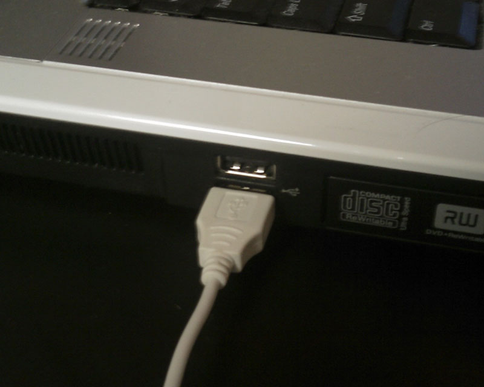
图片 13.1 –一个常见的USB端口。
电脑鼠标
我们的周围到处都是接口，比如我们的鼠标，我们可以依靠它的左右键进行工作，移动它可以到达我们的期望位置。鼠标是一个很好的接口例子，因为它展现了两个接口的特性 – 它的实现可以改变。鼠标可以是圆球、跟踪球、光感鼠标或激光鼠标，但无论鼠标的实现原理是什么，我们都可以按照我们在很多年前已经学习的知识来使用鼠标。沿着我们的鼠标垫移动它或者旋转轨迹球，发送正确的命令到计算机来移动屏幕上的光标；点击按钮可以从计算机上获得期望的响应。电源插座
两口或三口的电源插座提供了电力设备之间的接口，比如您的冰箱或吊扇和城市提供的电网之间的接口。我们这里涉及但许多接口，但是三口插座允许我们利用地线，而两口插座却不能。 我们的设备比如笔记本或台式电脑，由于它们的电源需求和过高峰电压保护，所以它们只能插入到三口插座中。而比如台式风扇或手机适配器这样的设备仅使用两口插座，但是您可以把它们插入到任何一种类型的插座中，因为三口插座提供了两口插座通过的所有功能，它仅是做了进一步的改进，提供了接地功能而已。 也就是说三口插座实现了两口插座的接口。如果我们为一些常用的插座类型创建一颗继承关系树，它应该如下所示，但是这已经进行了简化，它排除了您的电冰箱或冷藏库要插入的高电压线。
图片 13.2 -电源插座的树形图 我们可以使用这个图表来帮助我们在适当的位置放置标注、维护5万英尺长的类及它们的关系。同时它可以使我们明了地知道在哪个层次使用哪个类。看到这个图表，知道如果我要使用一个重型吹风机，我可以查看浴室并找到任何实现了三口插座的东西，而台式风扇则可以插入到房间中的任何电源插座上。
编程说明
当提到编程时，我们使用接口来定义一些其它类依赖的函数。当编程时，您有时候会发现您正在定义很多具有相同输入输出和名称的函数。我们称这个结合物为函数的签名。当符合这些限制时，您可以书写一些需求并把它提交给您的程序员，告诉他们要提供的功能是什么，但是接口可以强制编译器确认您是否已经提供了这些函数。 查看这个应用的一个方法是是考虑这组示例对象，如下所示：
图片 13.3接口概述 这个层次使我们看到了我们的武器的规划情况，我们已经创建了两个接口：IWeapon 和 IZoomedWeapon接口，当然此时它们的内容细节还不是很重要。我们可以看到Pistol, MachineGun 和RocketLaunchersjoxoame实现了IWeapon接口，而SniperRifle实现了IZoomedWeapon接口。当使用接口进行工作时，通常会在接口名称前面加上前缀“I”，以便可以识别它们。 使用接口是有用的，它可以作为强制器或精确的规则，比如IWeapon 和 IZoomedWeapon。编译器使用接口作为您的代码的需求文档。每个接口定义必要的函数，当您实现那个函数时，编译器进行检查来确保您已经实现了它们。查看IWeapon，我们在伪代码中可以看到以下信息： 所有的武器都会实现Primary Fire(一级火力)，它接受了开火速率，Secondary Fire(二级火力)方法接受了开火的轮数。如果执行成功，它们都将返回假。 为了确保数据完整性，我们将定义两个常量，在这个实现过程中将会使用它们，即Maximum Firing Rate(最大开火速率) 和Minimum firing Counter(最小开火计数器)。 当您尝试编译上面的类时，编译器将会检查实现IWeapon接口的手枪、机枪和其它的类，来判断它们是否实现了必要的函数。根据不同的语言，不实现接口中定义的函数可能会在编译时导致产生错误或一些恐怖的输出。
定义接口
Unreal使用Interface关键字来声明接口，由于函数签名的不同，使得它和我们前面讨论的类不同。在Unreal Script中，我们可以根据需要自由地定义任何多个函数或数据类型。这包括函数、结构体、枚举值或其它任何没有真正地实例化内存的东西。您可以使用接口把您的这些声明集中到一起，从而可以最小化您可能遇到的代码复制问题。 在Unreal Script中，接口是以简单的方式进行定义的，它遵循类设置的标准。以下是我们刚刚看到的IWeapon接口，但这次是使用Unreal Script声明的，而不是使用伪代码。Interface IWeapon; /* Define our constants(声明常量) */ const MaximumFiringRate = 0.05; // 60/1200 const MinimumFiringCounter = 3; /* All following function declarations(以下是函数声明) */ function bool PrimaryFire(float Rate); function bool SecondaryFire(int Counter);
声明和定义
为了使得虚幻引擎3能够正常编译，那么从返回类型到输入值的任何东西都要和函数签名相匹配。在这种情况下，引出了编程的另一个非常重要方面的问题，即Declaration(声明)和Definition(定义)的区别。- 接口声明函数，它提供必要的元素，比如返回类型和输入参数。
- 当您在类中实现接口时，您可以定义函细节，比如它如何进行工作或它做了什么。
接口继承
和我们讨论的电源适配器类似，您可以依赖不同的接口来构建新的接口。这和扩展类的方式一样，它使用Extends关键字。Interface IZoomedWeapon extends IWeapon; function bool ZoomedFire(float Rate, int FOV);确实在有些情况下，我们需要构建具有复杂的层次接口继承树，但是您应该尽可能地避免这种情况的发生。和类一样，您应该在需要的时候创建接口，并明确地定义它们。定义任何模糊的接口或者定义中包含任何不必要的声明，将会导致产生一些具有空函数的复杂类。当使用接口时事先做好规划是非常有好处的。如果您开始进行这方面的讨论时，我们强烈推荐您学习面向对象分析及设计的课程或关于UML的书籍。
实现接口
使用Unreal Script在类中实现接口是非常简单的，和在类的派生中使用的方式类似。但是，接口可能是更加独立的。让我们看一下这两个例子来进行理解。Pistol(手枪)类实现了IWeapon接口，它的类在UnrealScript中如下所示：
Class Pistol extends UTWeapon implements(IWeapon);
function bool PrimaryFire(float Rate)
{
if (Rate > class'IWeapon'.const.MaximumFiringRate)
return true;
/* Do mumbo jumbo here */
return false;
}
function bool SecondaryFire(int Counter)
{
if (Counter < class'IWeapon'.const.MinimumFiringCounter)
return true;
/* Do jumbo mumbo here */
return false;
}
正如您所看到的，它实现了接口中声明的必要函数，当您在编译它时将不会产生错误。您将会看到一行特殊的代码…
if (Rate > class'IWeapon'.const.MaximumFiringRate)这行代码是您如何访问接口中的常量的示例。通常，您可以把接口当做类来对待，您可以按照通过类来访问常量一样的方式来访问接口中定义的元素。(这在第三章中进行了讨论)。 作为示例，如果您正在编译没有正确实现的接口，您会看到类似于以下的错误：
Error, Implementation of function 'SecondaryFire' conflicts with interface 'IWeapon' - parameter 0 'Counter' (错误，函数'SecondaryFire'的实现和接口'IWeapon'相冲突’ – 参数0 'Counter') Compile aborted due to errors.(由于错误导致编译中止。)让我们看一下代码片段。
Class SniperRifle extends UTWeapon implements(IZoomedWeapon);
function bool PrimaryFire(float Rate)
{
if (Rate > class'IWeapon'.const.MaximumFiringRate)
Rate = class'IWeapon'.const.MaximumFiringRate;
/* Do mumbo jumbo here */
return false;
}
function bool SecondaryFire(int Counter)
{
if (Counter < class'IWeapon'.const.MinimumFiringCounter)
Counter = class'IWeapon'.const.MinimumFiringCounter;
/* Do jumbo mumbo here */
return false;
}
function bool ZoomedFire(float Rate, int FOV)
{
/* boom headshot! */
return false;
}
正如您看到的，这个类实现了IZoomedWeapon接口，反过来又继承了IWeapon接口。编译器期望这两个接口都被实现，并且通常它会检查当前接口上面的每个接口来确保正确地定义了它们的函数。这是另一个保持接口树简短的原因 – 可以把它们想象为短木丛或灌木丛。
同样，您会注意到我们的类中都没有定义常量。
当您初次使用接口进行工作时，您无疑会有一段艰难的适应时间。或许创建接口索引卡来帮助您保持接口的明了是有用的。
| IWeapon | |
函数
|
常量
|
| IZoomedWeapon extends IWeapon | |
函数
|
常量
|
- 接口允许我们声明那些在我们的类中必须实现的函数。
- 它们为我们提供了把需求强加到函数声明上的方法。
- 它对实现没有要求，但对函数签名(也称为声明)有要求。
- 它们焦点是如何使用函数。
- 不同类之间是实现是不同的；定义是可以不同的。
- 如果在父类中实现了一个函数，那么它将满足接口的需求。
- UT3为我们提供了定义除了不需要实际内存的东西的枚举值、结构体和常量的方法。
- 可以实现多个接口，但应该仅在特定环境下使用。
- 实现统一层次结构中的两个接口会使您的代码产生问题，所以应尽量避免这样做。
为什么使用接口？
正如我们已经讨论的，接口为编译器提供了一种确保类和某些需求说明一致的机制。Epic发布了几个接口，包括但不限于UI元素、在线游戏性的许多元素及某些数据存储元素。如果您仔细查看这些接口，您会发现每个接口已经按照我们示例中的方式实现了；第二种方法实现方法是作为变量类型，和我们在类中实现接口的方式类似。这种情况的主要示例是OnlineSubsystem：/** The interface to use for creating and/or enumerating account information (这个接口用于创建 和/或 列举账户信息)*/ var OnlineAccountInterface AccountInterface; /** The interface for accessing online player methods (访问在线玩家的方法的接口) */ var OnlinePlayerInterface PlayerInterface; /** The interface for accessing online player extension methods (访问在线玩家的扩展方法的接口)*/ var OnlinePlayerInterfaceEx PlayerInterfaceEx; /** The interface for accessing system wide network functions (访问系统网络函数的接口)*/ var OnlineSystemInterface SystemInterface; /** The interface to use for creating, searching for, or destroying online games (用于创建、搜索或销毁在线游戏的接口)*/ var OnlineGameInterface GameInterface; /** The interface to use for online content (用于在线内容的接口)*/ var OnlineContentInterface ContentInterface; /** The interface to use for voice communication (用于语音通信的接口)*/ var OnlineVoiceInterface VoiceInterface; /** The interface to use for stats read/write operations (用于统计数据 读取/写入 操作的接口 )*/ var OnlineStatsInterface StatsInterface; /** The interface to use for reading game specific news announcements (用于读取游戏特定消息声明的接口) */ var OnlineNewsInterface NewsInterface;这巩固了我们已经学习的关于接口的信息，但是它或许不是非常地明显。让我们在回顾一下先前定义的武器。我们已经定义了我们的接口，并它们就会在那里，以便其它的类可以使用它们。我们的用户可以具有一个和我们这里列出的一样的函数：
Function bool foo (IWeapon w)
{
w.PrimaryFire(60/1200);
/* any other things it wants to do （它想做的其它事情）*/
}
和我们先前在类、函数参数和结构体中声明变量类型的方式一样。向上或向下进行类型转换要看您怎么看待它，事实上当您当您要使用那个变量时它已经被类型转换为那种类型了。这种方式在我们的整个默认代码基中都有使用，同样，它对于引用东西时也是非常常用
| 基本类型 | 类 | 常量 |
|
|
|
结束语
什么时候创建子类及什么时候创建接口是很多人经常问到的问题，这是一个很好的问题。当您不断地使用接口时，您会发现接口产生和创建子类有一样的效果，它们唯一的不同是- 子类不能防止您改变函数的签名，这是使用接口的主要情况。正如前面讨论的，某些项目需要在定义类之前定义接口。 如果我们不考虑这个问题，那么便只能让运气控制我们的命运。一个简单的拼写错误可能会导致几个小时的调试，而接口可以直接找出您函数的哪行没有进行正确地声明。指南 13.1 – 指南针, 第一部分:指南针接口
现在我们需要花几分钟时间来实现某种接口，只是想让大家更理解到目前为止我们所讨论的内容。这第一个接口的目标比较低，关注细节，稍后我们将做一些更加有趣的事情。 我们的地图设计人员和HUD编码人员来到我这里，他们要定义一个新的元素，指南针。这个元素的目的是把它放到我们的关卡中，使得地图制作人员可以更精细地控制北方，这样HUD程序员便有一些要求，它们使用这些要求来定义我们的接口，然后再定义实际的Compass(指南针)类。 指南针需求：| 地图制作人员 | 编码人员 |
|
|
interface ICompass;2. 声明GetRadianHeading()函数，返回对象的没有旋转的方向。
function float GetRadianHeading();3. 声明GetDegreeHeading()函数，返回把弧度转换为角度后的值。
function float GetDegreeHeading();4. 声明GetYaw()函数，返回对象Rotation(旋转值)的Yaw向量。
function int GetYaw();5. 声明GetRotator函数，返回完整的rotator对象。
function Rotator GetRotator();6. 声明GetVectorizedRotator()函数，返回rotator(旋转器)，并把它转换为向量。
function vector GetVectorizedRotator();
指南 13.2 –指南针, 第二部分:指南针类的实现
我们可以使用这个接口并以简单的方式构建一个指南针，但是我们应该做一些调查来确保我们不会最终实现早已存在的东西。避免我们自己书写代码的唯一有用的元素是rotator，它似乎存在于每个元素中。它也提供了我们的地图设计人员已经熟悉了的接口，及旋转工具。 Object类有很多非常好的功能和函数，它们大多数都非常有用，但是actor实际上实现了我们正在查找的rotator(旋转器)，并且它具有位置向量，所以这样便容易了很多。var(Movement) const vector Location; // Actor's location; use Move to set. (Actor的位置；使用Move来设置。) var(Movement) const rotator Rotation; // Rotation(旋转值)这是，我们可以书写代码来编写我们的类了，我们打算实现接口并继承这个类。 1. 定义我们的类，扩展actor类，设置它可以放置，实现我们的ICompass接口。
class Compass extends actor placeable implements(ICompass);2. 定义获得Rotator的函数。由于我们继承了actor类，所以我们已经可以获得rotator。我们可以快速地定义三个函数。
// Return the yaw of the actor 返回actor 的yaw值。
function int GetYaw()
{
return Rotation.Yaw;
}
function Rotator GetRotator()
{
return Rotation;
}
function vector GetVectorizedRotator()
{
return vector(Rotation);
}
我们仅关心Yaw值，然后为我们的开发人员提供原始数据的访问权。
3. Yaw实际上不是我们用于HUD所需要的格式，但是对于我们地图设计人员来说，它可以工作的很好。我们需要对rotator进行一些操作，从而且确保方向对于UI来说是精确的。让我们花点时间来细分这个功能。首先声明GetRadianHeading()函数。
function float GetRadianHeading()
{
}
a. 需要三个局部变量。
这是在车辆中使用的一个算法，它保存了弧度转换值，您可以在UTVehicle.uc中的第1199行看到它。
4. 把Radian(弧度)测量法转换为度数。现在，我们使用弧度测量法获得我们刚刚计算的弧度。有一个常量是非常有用的，它是180/PI，它是已经为我们预计算好的。
local Vector v; local Rotator r; local float f;b. 获得Yaw向量。注意我们已经把它复制到新的rotator对象的yaw值中。这是我们简化rotator的第一步。
r.Yaw = GetYaw();c. 把rotator(旋转值)转换为Vector (向量)，这使得对角度的处理变得更加容易。
v = vector(r);d. 使用epic提供的函数展开Heading(方向)。如果您在Unreal中编程时需要获得更好的精确度，那么很多和它类似的函数都是非常有用的。
f = GetHeadingAngle(v);e. Unwind that heading, using another of the built in functions. This actually returns a radian value, but it may be negative. 使用另一个内置函数展开方向。这实际上会返回一个弧度值，不过它可能是负值。
f = UnwindHeading(f);f. 通过添加2Pi来把值转换为正值。
while (f < 0) f += PI * 2.0f;g. 最后，返回那个值。
return f;
function float GetDegreeHeading()
{
local float f;
f = GetRadianHeading();
f *= RadToDeg;
return f;
}
5. 现在我们已经完成了重要的工作。剩下的事情便是做UI相关的事情。在我们离开之前，我们可以把调试信息输出到日志文件中，这对于我们稍后使用地图工作是非常有用的。当加载关卡时，有一个很有用的调试函数是PostBeginPlay。当游戏开始运行时向日志文件中输出方向信息。
event PostBeginPlay()
{
`log("===================================",,'UTBook');
`log("Compass Heading"@GetRadianHeading()@GetDegreeHeading(),,'UTBook');
`log("===================================",,'UTBook');
}
6. 我们已经建立了所有的函数，但是我们现在需要为我们的地图附加来两个可见的项。特别是我们需要在我们的对象上描画一个图标和箭头。我们也可以在这时改变两个数组元素，从而确保我们的元素保存正确的值，并且确保当地图重置时这些值不会被删除或改变。
DefaultProperties
{
}
a. 定义一个新的ArrowComponent元素，命名为arrow。这是我们的关卡设计人员将要描画的反应对象指向的实际方向的真实箭头。
7. 为了更好地管理，还需要启动最后一组元素，让我们在完成这个任务之前讲解它们。
Begin Object Class=ArrowComponent Name=Arrowb. Arrow Color(箭头颜色)范围是0-255，如果您具有Photoshop或Web开发经验，您应该熟悉这个范围。您可以根据需要调整这个值。虚幻编辑器中有一个设计良好的颜色选择器，但是您也可以使用整数值。
ArrowColor = (B=80,G=80,R=200,A=255)c. 这是Arrow(箭头)的比例，而不是权重。随着这个比例值升高，它的长度或尺寸将会增加。
ArrowSize = 1.000000d. 为它提供一个有好的名称来帮助我们最小化复杂度。
Name = "North Heading"e. 现在完成了Arrow的定义，把它添加到组件数组中。您将会在UnrealScript中的地图组件中看到这种形式。
Components(0) = Arrowf. 比如，Sprite组件。这个组件比较容易实现，但是它需要我们知道包、组 和/或 我们想显示的贴图的名称。按照我们先前的方式，为我们的Sprite定义新的组件对象。
Begin Object Class=SpriteComponent Name=Spriteg. 我们将插入我们要附加到我们的元素中的新贴图。编辑器中的所有2d sprites(图标)都是面向开发人员的，应该使它们保持尽可能小的干扰度。正如前面讨论的，我们的已经定义了Sprite - ‘UTBookTextures.compass’。
Sprite=Texture2D' CompassContent.compass'h. 现在，我们将设置一组布尔值，当打游戏时，把它隐藏在游戏中并避免把它加载到真正的游戏中。
HiddenGame = True AlwaysLoadOnClient = False AlwaysLoadOnServer = Falsei. 最后，完成它，把它添加到Components数组。这个您传入的元素是Name=Sprite entry。
End Object Components(1) = Sprite
a. bStatic是一个布尔值，控制地图设计人员是否可以在游戏中改变这个关于这个actor的信息。由于指南针应该总是指向北方，所以它应该是静态的。
您可以通过查看Component下的许多派生类来获得关于组件的更多信息。上面的操作已经可以在我们的对象上附加一个图标和箭头组件了。
bStatic = Trueb. bHidden控制这个actor的图元组件的可见性。您可以认为这是布尔值的失败保护，我们可以在Sprite组件上改变这个值。
bHidden = Truec. bNoDelete控制在游戏过程中是否可以删除这个actor。指南针消失是令人费解的，所以我们设置这个属性为真。
bNoDelete = Trued. bMovable控制actor的运动。它是actor类中的另一个失败保护。
bMovable = False
指南 13.3 –指南针, 第三部分: 测试指南针, 第一部分
现在所有的编码都已经完成了，至少指南针元素已经完成。现在我们应该编译代码，打开编辑器，检查是否一切正常，把它放到地图中，然后把它加载到UT3中测试那个元素是否正常工作。 1. 加载编辑器。您可以创建一个新的地图或打开一个已有地图。设置它使它具有必要的元素。 2. 打开Actor类别浏览器。它位于Generic Browser(通用浏览器)中，在Actor Classes(Actor类别)中包含了Unreal Script中的层次结构。 3. 应该已经加载了脚本包，因为它位于UTEditor.ini 文件的ModPackages列表中，但是如果由于某些原因没有加载它，那么跳转到File(文件) > Open(打开)，然后导航到您的Unpublished\CookedPC\Scripts目录，您所编译好的.u文件存放在那里。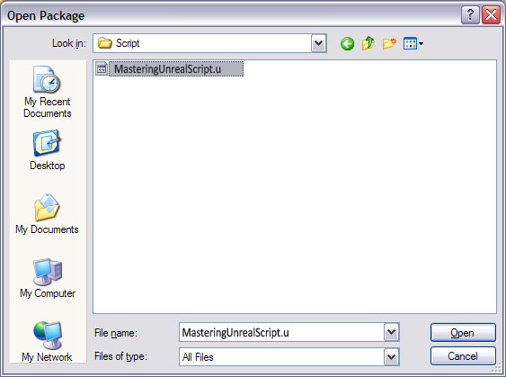
图片 13.4 -查找MasteringUnrealScript.u 文件的文件对话框 4. 一旦加载了该文件，那么在Actor类别的树状结构中便应该显示了指南针元素，如图13.5所示。选择它并跳转到您的地图，现在您应该可以右击并选择为您提供的菜单选项”Add Compass Here(添加指南针到这里)”

图片 13.5 -具有我们的Compass (指南针)的Actor类别浏览器。 5. 选择这个元素将会创建一个图片13.6中显示的元素。通过在编辑器中选中它，并切换到旋转工具来查看箭头的旋转，从而确保它是否可以正常工作。
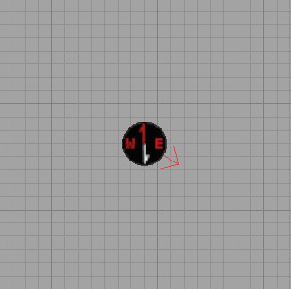
图片 13.6 -地图中的Compass (指南针)对象。 6. 如果您现在加载您的关卡，那么在您的日志文件中您应该看到以下东西，它显示了它正在真正地工作。

图片 13.7 -游戏日志文件的摘录。 正如我们这里看到的，我们的指南针正在指出正确的值，即显示了弧度也显示了角度单位，所以开发人员可以做他们需要执行的操作。这是计划和接口实现汇合到一起的主要示例。现在所以下概括，我们的过程如下所示：
- 获得这个类需要的东西。
- 按照需求定义接口
- 定义类的函数，实现接口作为失败保护。
- 附加必要的组件。
- 测试
指南 13.4 – 小地图, 第一部分: MU_MINIMAP 类
Minimaps should be fairly familiar to anyone who has played any of the open sandbox –style games that have been released recently. Essentially, this is a map displayed on the screen at all times that shows a portion of the world surrounding the player. As the player moves or turns, the map moves or rotates with them. The minimap we will create will consist of two parts: the map and a compass overlay 小地图对于那些玩过最近发行的沙箱类型的游戏的人来说应该是非常熟悉的。从本质上讲，这是一个一直在屏幕上显示的地图，它显示了玩家周围的一部分世界。随着玩家移动或转身，地图会随着它们移动或旋转。我们创建的小地图由两部分组成：地图和指南针覆盖图。 为了创建一个运转的小地图系统，我们需要三个东西：放置在地图中的Compass类的子类，它存放正在讨论的地图的某些特定数据；一个新的处理向屏幕描画地图的HUD(游戏信息显示)类；和用于强制使用新的HUD类的游戏类型。HUD类将会扩展基类UTHUD类，仅需要向它添加必要的函数来描画小地图。Gametype(游戏类型)类是UTDeathMatch游戏类型的简单扩展，它重载了先前使用的HUD并对和小地图系统相关的信息进行了少量设置。 首先，在这个指南中，我们将声明一个MU_Minimap类，它是Compass类的子类。 1. 打开ConTEXT，使用UnrealScript轮廓创建一个新的文件，命名为MU_Minimap.uc。 2. 声明新类MU_Minimap，使它继承于Compass类。class MU_Minimap extends Compass;3. 这个类需要声明几个可编辑变量。首先，是地图本身是用的存储方材质引用的MaterialInstanceConstant变量。一旦我们设计好代码后，我们将会进行材质设置，现在我们已经准备好了在我们的地图中建立MU_Minimap actor了。
var() MaterialInstanceConstant Minimap;
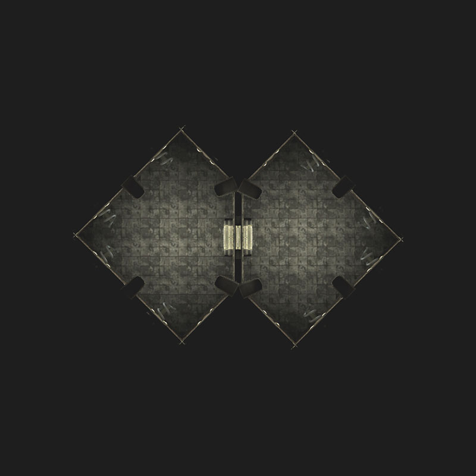
图片 13.8 -小地图贴图实例。 4. 也需要另一个MIC变量，它引用了指南针覆盖图的材质。
var() MaterialInstanceConstant CompassOverlay;

图片 13.9 –指南针覆盖图的示例。 5. 为了建立关卡并使得地图屏幕截图正确，我们向类中添加了球体组件并使它是可编辑的。基本思想是这个玩家的位置代表地图的中心，球体的半径代表地图在每个方向上所覆盖的范围。
var() Const EditConst DrawSphereComponent MapExtentsComponent;6. 名称为bForwardAlwaysUp的布尔变量，它允许设计人员指定是否玩家的前进运动应该总是显示为屏幕上的向上运动或者是否相对于North(北方)方向的偏移角度由MU_Minimap actor 的旋转值来决定。设置它总是为真是最好的选择，因为它最最符合情理，但是我们把它留作为选项。
var() Bool bForwardAlwaysUp;

图片箭头显示了前进运动的方向。左侧设置bForwardAlwaysUp 为False(假)，右击设置它的值为True(真)。 7. 为了跟踪玩家在地图中的位置，我们把这个位置转换为地图贴图中的一个位置，我们需要知道被地图贴图转换后在世界空间坐标在X轴和Y轴上的范围。两个Vector2D变量将用于存储这些值。
var Vector2D MapRangeMin; var Vector2D MapRangeMax;8. 另一个Vector2D变量将存储和地图贴图的中心相对应的X和Ｙ世界空间坐标。
var Vector2D MapCenter;9. 将会在PostBeginPlay()函数中分配MapCenter变量的值。重载这个函数并分配值给这个变量，同时确保也可以调用父类的PostBeginPlay()函数。
function PostBeginPlay()
{
Super.PostBeginPlay();
MapCenter.X = MapRangeMin.X + ((MapRangeMax.X - MapRangeMin.X) / 2);
MapCenter.Y = MapRangeMin.Y + ((MapRangeMax.Y - MapRangeMin.Y) / 2);
}
10. 接下来，在PostBeginPlay()函数中，通过从MapCenter(地图中心)开始加上或减去MapExtentsComponent(地图范围组件)的SphereRadius(球体半径)来计算地图在每个坐标轴上的维度。
MapRangeMin.X = MapCenter.X - MapExtentsComponent.SphereRadius; MapRangeMax.X = MapCenter.X + MapExtentsComponent.SphereRadius; MapRangeMin.Y = MapCenter.Y - MapExtentsComponent.SphereRadius; MapRangeMax.Y = MapCenter.Y + MapExtentsComponent.SphereRadius;11. 最后，创建一个默认半径为1024.0、颜色为绿色的DrawSphereComponent。同时设置默认属性中的bForwardAlwaysUp为真，因为这是最期望获得的功能。
defaultproperties
{
Begin Object Class=DrawSphereComponent Name=DrawSphere0
SphereColor=(R=0,G=255,B=0,A=255)
SphereRadius=1024.000000
End Object
MapExtentsComponent=DrawSphere0
Components.Add(DrawSphere0)
bForwardAlwaysUp=True
}
12. 保存脚本来保存您的成果。
指南 13.5 – 小地图, 第二部分: MINIMAPGAME 类
这个指南主要关注于新的小地图游戏类型类的创建。它的目的是简单地存储一个放到地图中的MU_Minimap actor的引用，告诉游戏使用新的HUD类，该HUD类将会在下一个指南中进行创建。 1. 打开ConTEXT，使用UnrealScript轮廓创建一个名称为MinimapGame.uc的新文件。 2. 声明新的MInimapGame类，使它继承于UTDeathMatch类。class MinimapGame extends UTDeathMatch;3. 这个类中需要声明一个变量，名称为GameMInimap，它是到MU_Minimap对象的引用。
var MU_Minimap GameMinimap;4. 当游戏初始化时，我们必须使用放置在地图中的MU_Minimap actor的引用来填充这个变量。重载InitGame()函数，以确保调用父类的函数版本。
function InitGame( string Options, out string ErrorMessage )
{
Super.InitGame(Options,ErrorMessage);
}
5. 在InitGame()函数中，需要一个局部变量MU_Minimap。
local MU_Minimap ThisMinimap;6. 在关卡中使用一个AllActors迭代器找出关卡中的MU_Minimap actor，并把它分配给GameMinimap变量。
foreach AllActors(class'MasteringUnrealScript.MU_Minimap',ThisMinimap)
{
GameMinimap = ThisMinimap;
break;
}
7. 在默认属性中，重载了游戏类型的HUDType变量，从而强制使用我们将要创建的HUD类。
HUDType=Class'MasteringUnrealScript.MinimapHUD'8. 同时，重载MapPrefixes(0)变量来决定哪个地图和这个游戏类型相关连。
MapPrefixes(0)="COM"9. 保存脚本来保存您的成果。
指南 13.6 – 小地图, 第三部分:小地图的初始化设置
现在已经完成了minimap(小地图) actor和游戏类型类，现在我们开始设计HUD类。在本指南中，我们将专注于声明类及它的变量并设置这些变量的某些默认属性。 1. 打开ConTEXT，使用UnrealScript轮廓创建一个名称为MinimapHUD.uc的新文件。 2. 声明MinimapHUD类，并使它继承于UTHUD类。class MinimapHUD extends UTHUD;3. 这个类也存储它自己到关卡中的minimap(小地图)actor的引用。
var MU_Minimap GameMinimap;4. 名称为TileSize的浮点变量存储了用于指出任何时候显示的完整地图的量的数值。所以，如果完整地图贴图是2048x2048，而这个值是0.25，那么将会显示的地图贴图部分是512x512。
var Float TileSize;
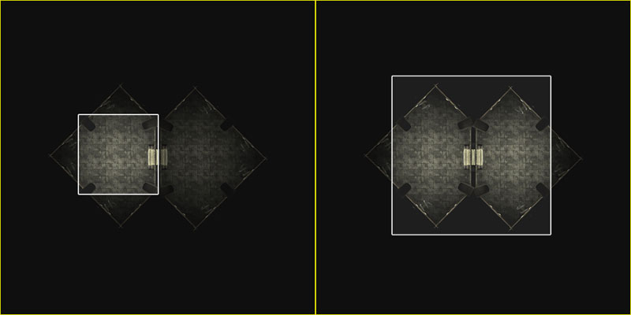
图片 13.11 –使用TileSize 值0.25和0.5来描画地图部分。 5. 名称为MapDim的Int值代表了屏幕上描画的地图的维度，默认值是1024x768。
var Int MapDim;
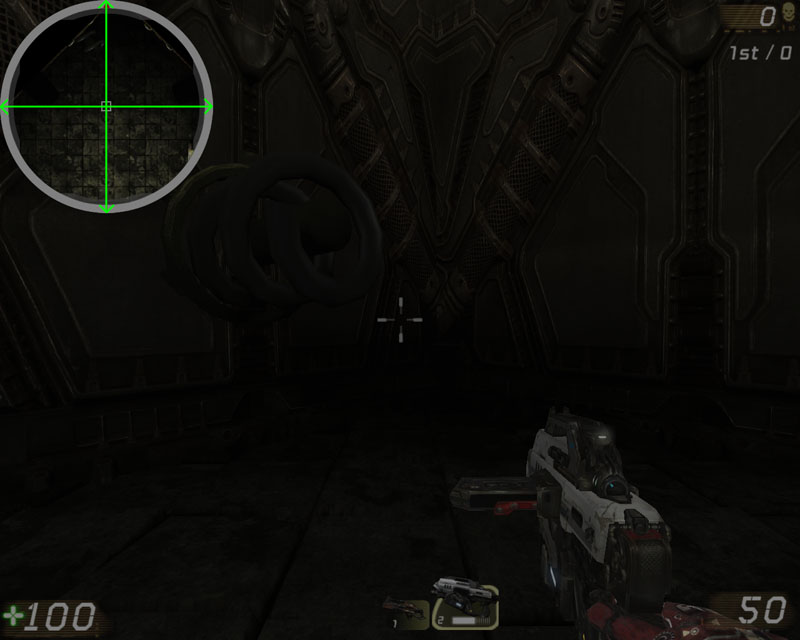
图片 13.12 –MapDim 指出了描画在屏幕上的地图的维度。 6. 另一个Int变量指定了代表地图上的玩家的方框的尺寸，默认分辨率是1024x768。
var Int BoxSize;

图片 13.13 –BoxSize 指定了屏幕上描画的代表玩家的方块的维度。 7. 最后一个变量是一个具有两个颜色的数组，它们用于描画地图上的玩家。其中一个颜色是HUD的拥有者，另一个颜色是地图中的所有其它玩家。
var Color PlayerColors[2];8. 默认属性代码块是非常简单的。
defaultproperties
{
MapDim=256
BoxSize=12
PlayerColors(0)=(R=255,G=255,B=255,A=255)
PlayerColors(1)=(R=96,G=255,B=96,A=255)
TileSize=0.4
MapPosition=(X=0.000000,Y=0.000000)
}
9. 保存脚本来保存您的成果。
指南 13.7 – 小地图, 第四部分: MINIMAPHUD 函数
在我们继续实现描画地图功能之前，需要在MinimapHUD类中重载PostBeginPlay()和DrawHUD()函数，并添加一个名称为GetPlayerHeading()的新函数。 1. 打开ConTEXT和MinimapHUD.uc文件。 2. 首先，重载PostBeginPlay()函数，并使用它到地图中小地图actor的游戏类型的引用分配给这个类的GameMInimap变量。
simulated function PostBeginPlay()
{
Super.PostBeginPlay();
GameMinimap = MinimapGame(WorldInfo.Game).GameMinimap;
}
3. 接下来，重载DrawHUD()函数，并添加负责描画地图的函数调用DrawMap()。这将使得无论玩家是活的或死亡状态、无论游戏是正在进行中还是终止状态时，都会强制描画地图。
function DrawHUD()
{
Super.DrawHUD();
DrawMap();
}
4. GetPlayerHeading()函数和先前在创建的Compass类中的GetRadianHeading()函数类似。从Compass类中复制这个函数，然后把它粘帖到MinimapHUD类中。现在一下的代码应该在MinimapHUD类中。
function float GetRadianHeading()
{
local Vector v;
local Rotator r;
local float f;
r.Yaw = GetYaw();
v = vector(r);
f = GetHeadingAngle(v);
f = UnwindHeading(f);
while (f < 0)
f += PI * 2.0f;
return f;
}
5. 把函数的名称改为GetPlayerHeading()。
function float GetPlayerHeading()
{
local Vector v;
local Rotator r;
local float f;
r.Yaw = GetYaw();
v = vector(r);
f = GetHeadingAngle(v);
f = UnwindHeading(f);
while (f < 0)
f += PI * 2.0f;
return f;
}
6. 接下来，把这段代码
r.Yaw = GetYaw();改为：
r.Yaw = PlayerOwner.Pawn.Rotation.Yaw;7. 保存脚本来保存您的成果。
指南 13.8 –小地图, 第五部分: DRAWMAP() 初始设置
DrawMap()函数负责执行其它剩余的所有必须计算，并把它地图描画到屏幕上。在这个指南中，将会声明函数和所有局部变量。 1. 打开ConTEXT和MinimapHUD.uc脚本。 2. 声明DrawMap函数。
function DrawMap()
{
}
3. 两个局部浮点变量将会储存地图中的小地图actor指定的North方向和玩家当前正在面对的方向。
local Float TrueNorth; local Float PlayerHeading;4. 为地图的rotation(旋转值)和指南针覆盖图的rotation(旋转值)声明局部浮点变量。
local Float MapRotation; local Float CompassRotation;5. 声明几个局部Vector(向量)变量。它们的应用将会在稍后进行详细解释。
local Vector PlayerPos; local Vector ClampedPlayerPos; local Vector RotPlayerPos; local Vector DisplayPlayerPos; local vector StartPos;6. 小地图材质使用一个透明蒙板来强制地图显示为圆形。为了把这个蒙板移动到适当的位置，把Vector Parameter(向量参数)的R和G分量添加到贴图坐标上来偏移蒙板贴图的位置。需要一个LinearColor局部变量来把适当的值传递到材质的Vector Parameter(向量参数)中。
local LinearColor MapOffset;7. 一个局部浮点值存储地图在世界空间坐标中所覆盖的距离。简单地说，我们仅需要使用一个方形的地图贴图，因此仅需要一个区域即可。
local Float ActualMapRange;8. 最后，声明一个Controller局部变量，它和迭代器结合使用来描画地图中的所有玩家的位置。
local Controller C;9. 再继续向下进行之前，需要设置在屏幕上描画地图的位置、调整后的地图的尺寸和代表玩家的方块的尺寸。类的MapPosition变量用于存放相关的值。把这些值和视口的宽度及高度相乘将会获得描画地图的绝对位置。视口的当前宽度和高度是以FullWidth 和 FullHeight变量的方式提供的。
MapPosition.X = default.MapPosition.X * FullWidth; MapPosition.Y = default.MapPosition.Y * FullHeight;10. 每帧中地图及代表玩家的方块的大小是通过把这些变量的默认值和当前分辨率下视口的缩放因数相乘来进行计算的。这个缩放因素存放在ResolutionScale变量中。
MapDim = default.MapDim * ResolutionScale; BoxSize = default.BoxSize * ResolutionScale;11. 保存脚本来保存您的成果。
指南 13.9 –小地图, 第六部分: PLAYERPOS 和 CLAMPEDPLAYERPOS
PlayerPos 和ClampedPlayerPos变量把玩家的当前位置存放为从地图中心开始的正规化偏移量。如果您把整个地图在每个方向上的长度考虑为1.0，那么这些变量的每个分量可以具有-0.5 到0.5之间的值，因为它们代表着距离中心处的偏移量。您或许在想为什么使用从地图中心的偏移量。原因是在材质中地图将围绕它的中心进行旋转，为了精确地计算我们稍后要看到的每个东西的位置，所以我们需要知道相对于地图中心的位置。 当然，在我们计算正规化值之前，我们必须知道地图在世界空间坐标值中所覆盖的长度。这是本指南开始的要处理的问题。 1. 打开ConTEXT 和MinimapHUD.uc脚本。 2. 尽管X-轴和Y-轴范围值应该相等，但是ActualMapRange通过获取X-轴和Y-轴范围之间较大的那个值来计算ActualMapRange。这仅是作为一个失败保护。每个坐标轴的范围是通过获得在GameMinimap的MapRandMin和MapRangeMax元素中设置值的差值来计算的。
ActualMapRange = FMax(GameMinimap.MapRangeMax.X - GameMinimap.MapRangeMin.X,
GameMinimap.MapRangeMax.Y - GameMinimap.MapRangeMin.Y);
3. 接下来的部分是非常有技巧的，因为当获取关卡的屏幕截图来用作为地图时，您必须使用UnrealEd中的顶视图，因为它没有透视变形。但是，在那个视口中显示的坐标轴，X轴是垂直方向，而Y轴是水平方向。但是当考虑HUD和Canvas(画布)时，则视口的水平方向是X轴，垂直方向是Y轴。使事情更加复杂的的是，当从顶视口看时，UnrealEd中的X-轴随着地图从顶部到底部移动而增加，而在游戏视口中它随着从顶部到底部移动而不断增加。
最终归结为，必须交换坐标轴，并且当处理X-轴的世界坐标时，它的值把必须是反号。使用和处理HUD一样的方式，这将使得世界空间坐标和它们在UnrealEd的顶视口中呈现的样子相对齐。
让我们从PlayerPos的X分量开始。为了获得从中心处开始的正规化偏移量，必须使用玩家的位置减去地图的中心位置。然后是那个值除以我们刚刚计算的ActualMapRange。记住HUD中的位置的X分量和世界空间位置的Y分量相对应。
PlayerPos.X = (PlayerOwner.Pawn.Location.Y – GameMinimap.MapCenter.Y) / ActualMapRange;4. PlayerPos的Y分量和世界空间位置的X分量相对应，但是为了获得相反值，则它必须乘以-1。获得这个结果的最简单的方式是交换减法操作数的顺序。
PlayerPos.Y = (GameMinimap.MapCenter.X - PlayerOwner.Pawn.Location.X) / ActualMapRange;5. 现在，我们知道了地图上的玩家的位置，但是当玩家距离其中一个边缘非常近时会发生什么哪？因为小地图的设计是为了显示玩家的中心位置及它周围的地图，如果我们允许玩家靠近地图的边缘而仍然把玩家显示在小地图的中心位置，那么地图贴图将可能会发生平铺。为了处理这个问题，我们使用ClampedPlayerPos变量来存储第二个位置来限制玩家的中心位置距离边缘足够的远，从而不允许任何平铺发生。
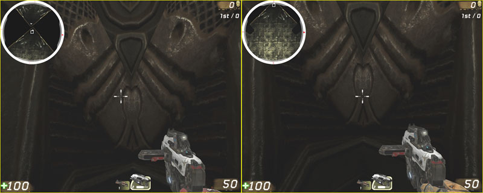
图片 13.14 –左侧描画的图没有区间限定，右侧描画的图有区间限定。 为了实现这个目的，使用了FClamp()函数。把传入的值区间限定到两个范围之内，我们可以确保那个位置永远处于安全范围内。两个限制值是：
-0.5 + (TileSize / 2.0)和
0.5 - (TileSize / 2.0)我们已经提到正规化偏移量的值是在-0.5到0.5之间。从这些之中添加或减少地图的一半将可以确保那部分将永远不会重叠导致地图贴图的平铺。 现在玩家的位置在X分量上进行区间限定。
ClampedPlayerPos.X = FClamp( PlayerPos.X,
-0.5 + (TileSize / 2.0),
0.5 - (TileSize / 2.0));
6. 现在对Y分量执行同样的操作。
ClampedPlayerPos.Y = FClamp( PlayerPos.Y,
-0.5 + (TileSize / 2.0),
0.5 - (TileSize / 2.0));
7. 保存脚本来保存您的工作。
指南 13.10 – 小地图, 第七部分: 地图旋转
现在我们必须旋转地图来处理玩家的朝向。旋转地图本身是非常容易的；我们仅需传入一个弧度值给材质中的Scalar Parameter(标量参数)来驱动Rotator表达式即可。为了使这个过程变得更加简单，材质中的Rotator将旋转到通过GetPlayerHeading() 或 GetRadianHeading()函数计算的rotation(旋转值)的相反方向，这是理想的，因为地图该旋转到玩家正在转向的相反方向。 最有趣的部分是计算地图中的玩家的旋转后的位置。我们知道玩家的位置是相对于贴图中心进行计算的，但是此时贴图已经被旋转了，所以我们刚才计算的位置已经不能和地图上玩家显示的位置相对应了。但是通过一些三角学，我们可以计算出旋转后的位置。首先，我们需要知道每个东西旋转了多少度。 1. 打开ConTEXT 和MinimapHUD.uc。 2. 需要使用适当的弧度值来赋值TrueNorth 和 PlayerHeading变量。TrueNorth = GameMinimap.GetRadianHeading(); Playerheading = GetPlayerHeading();3. 现在我们可以使用这些值来设置MapRotation、CompassRotation和InverseRotation的值，但是我们怎么实现它要依赖于小地图actor GameMInimap变量的bForwardAlwaysUp值。创建一个If语句使用这个变量的值作为条件。
if(GameMinimap.bForwardAlwaysUp)
{
}
else
{
}
4. 如果bForwardAlwaysUp为真，那么地图将会仅基于PlayerHeading和CompassRotation进行旋转。CompassRotation是指Playerheading和TrueNorth之间的差值。
MapRotation = PlayerHeading; CompassRotation = PlayerHeading - TrueNorth;5. 如果bForwardAlwaysUp为假，那么地图将基于PlayerHeading和TrueNorth的插值进行旋转，而CompassRotation的值和MapRotation一样。
MapRotation = PlayerHeading - TrueNorth; CompassRotation = MapRotation;6. 当围绕另一个点旋转一个点时的基本思想是使用圆的参数方程。 在整个示例中，半径是从地图中心到玩家为之的距离，或者是PlayerPos向量的长度。
VSize(PlayerPos)旋转的角度解释起来稍微有点复杂。旋转的角度是正X-轴或0弧度和从地图中心到玩家在旋转后所处位置的向量之间的角度。
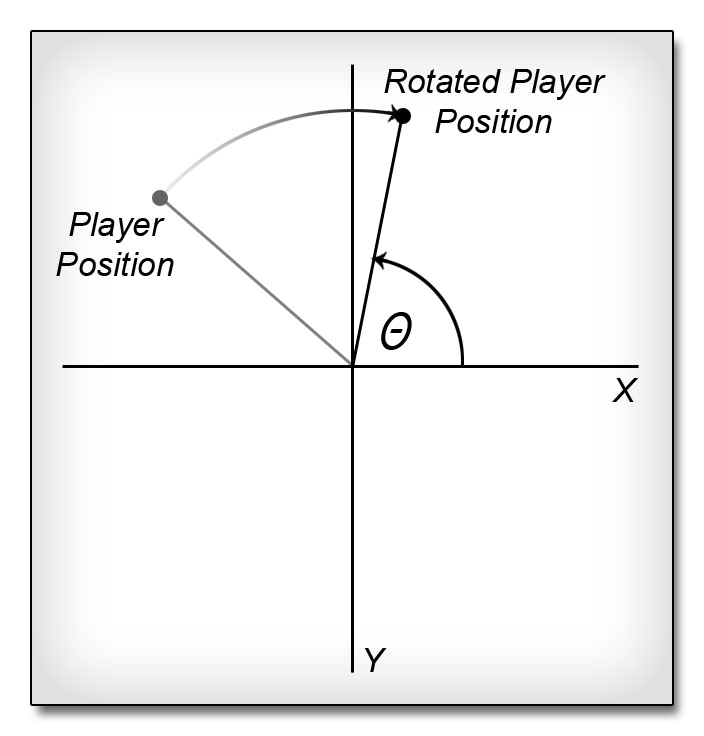
图片 13.15 –计算旋转后玩家的位置所需要的角度。 您或许在想，“完成这个计算的关键是计算旋转后玩家的位置，那么如果我们不知道那个位置我们怎样才能找到那个角度哪？”我们知道玩家的实际位置，并且我们可以找到从正X-轴和地图中心到那个玩家位置的向量之间的角度。这可以通过把玩家为之的Y和X分量传入到Atan()函数中，它将计算该角度临边和对边的反正切值。
Atan(PlayerPos.Y, PlayerPos.X)

图片 13.16 –到玩家的实际位置的角度。 现在我们知道了位置旋转的量。通过使用从正-X轴到玩家位置之间的角度减去MapRotation，我们可以计算处正X轴和旋转后的位置之间的角度。所以上面的等式的实际值是：
Atan(PlayerPos.Y, PlayerPos.X) – MapRotation

图片 13.17 –减去旋转角度值，获得期望的角度。 把所有的计算公式放到一起，那么旋转后玩家的位置按照如下方式计算：
DisplayPlayerPos.X = VSize(PlayerPos) * Cos( ATan(PlayerPos.Y, PlayerPos.X) - MapRotation); DisplayPlayerPos.Y = VSize(PlayerPos) * Sin( ATan(PlayerPos.Y, PlayerPos.X) - MapRotation);7. 注意我们已经通过旋转PlayerPos设置了DisplayPlayerPos的值。我们也需要通过以同样的方式旋转ClampedPlayerPos来设置RotPlayerPos。
RotPlayerPos.X = VSize(ClampedPlayerPos) * Cos( ATan(ClampedPlayerPos.Y, ClampedPlayerPos.X) - MapRotation); RotPlayerPos.Y = VSize(ClampedPlayerPos) * Sin( ATan(ClampedPlayerPos.Y, ClampedPlayerPos.X) - MapRotation);8. DisplayPlayerPos是旋转后的地图上的玩家的实际位置，它用于描画代表玩家的方块。RotPlayerPos是地图上的位置，它代表了显示部分的地图的中心。这个位置用于查找StartPos或显示地图部分的左上角的位置。这可以通过在X和Y向量上都加上0.5来进行计算，因为它们都从中心处发生了偏移，并且我们现在需要的是绝对值。然后，从每个向量中减去TileSize的一半。然后把结果区间限定到0.0到1.0之间，最后减去TileSize，这只是为了确保不会发生平铺，尽管这个值应该会落在这些限定范围之内。
StartPos.X = FClamp(RotPlayerPos.X + (0.5 - (TileSize / 2.0)),0.0,1.0 - TileSize); StartPos.Y = FClamp(RotPlayerPos.Y + (0.5 - (TileSize / 2.0)),0.0,1.0 - TileSize);
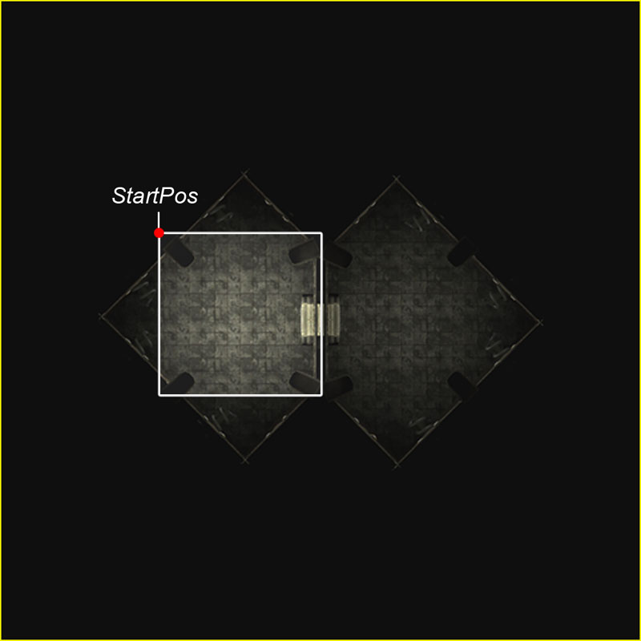
图片 13.18 –要描画的地图部分的左上角是StartPos 。 9. 旋转地图的最后一方面是设置要传入到材质中的MapOffset值，以便可以正确地平移透明蒙板。MapOffset的R 和 G向量的相反值对应着RotPlayerPos的X和Y向量。换句话说，RotPlayerPos的值乘以-1后，再把它们分配给MapOffset的R和G向量。但是首先，必须把它们区间限定到先前ClampedPlayerRot值被限定到的范围内，作为最后的保护。
MapOffset.R = FClamp(-1.0 * RotPlayerPos.X,
-0.5 + (TileSize / 2.0),
0.5 - (TileSize / 2.0));
MapOffset.G = FClamp(-1.0 * RotPlayerPos.Y,
-0.5 + (TileSize / 2.0),
0.5 - (TileSize / 2.0));
10. 保存脚本来保存您的成果。
指南 13.11 – 小地图, 第七部分:设置材质参数并描画地图
现在已经计算出了开始更新材质参数和描画地图所需要的一切东西，我们可以开始了。本指南将设置地图和指南针覆盖图材质的参数，并描画地图、指南针覆盖图和代表玩家的方块。 1. 打开ConTEXT 和MinimapHUD.uc脚本。 2. 地图材质具有MapRotation、TileSize 和MapOffset参数。MapRotation是一个标量参数，它控制着地图贴图的旋转值。TileSize也是一个标量参数，它透明蒙板的平铺和尺寸。MapOffset是一个向量参数，它控制这版透明蒙板的位置。指南针覆盖图材质有一个单独的标量参数CompassRotation，它控制覆盖图的旋转值。这所有的参数都可以使用MaterialInstanceConstant类的相应的Set*Paramater()函数来进行设置，并把参数的名称和值分配给它。放置每个参数的值的变量的命名和参数名称一样，从而使得您更加容易地知道它们的作用。
GameMinimap.Minimap.SetScalarParameterValue('MapRotation',MapRotation);
GameMinimap.Minimap.SetScalarParameterValue('TileSize',TileSize);
GameMinimap.Minimap.SetVectorParameterValue('MapOffset',MapOffset);
GameMinimap.CompassOverlay.SetScalarParameterValue('CompassRotation',CompassRotation);
3. 在我们描画任何东西之前，我们应该简单地讨论一下HUD是如何把东西描画到屏幕上的。实际上，HUD没有描画它自己的任何东西。而是另一个Canvas类包含了所有描画功能。HUD类包含了一个到当前Canavs的引用，当每次需要向屏幕上描画东西是便会使用它。一旦您理解了描画的工作原理，那么描画地图是非常简单。需要记住的一个非常重要的事情是描画东西的顺序，因为在同一个位置上的描画完一个东西后在描画另一个东西，将会把后描画的东西放到先描画的东西的上面。
首先，需要把Canvas的描画位置设置为地图的描画位置。
Canvas.SetPos(MapPosition.X,MapPosition.Y);4. 接下来，使用Canvas的DrawMaterialTile()函数来描画地图。这个函数取入要描画的材质、要描画的平铺块的宽度及高度、材质中开始描画的位置以及要描画的材质部分的宽度和高度。
Canvas.DrawMaterialTile(GameMinimap.Minimap,
MapDim,
MapDim,
StartPos.X,
StartPos.Y,
TileSize,
TileSize );

图片 13.19 –地图已经被描画在了屏幕上。 5. 接下来，把Canvas的位置设置为要描画的玩家所在的位置。这意味着DisplayPlayerPos需要从一个偏移量转换为绝对位置，这可以通过加上0.5来实现。然后，通过把得到的值减去StartPos来将其转换为相对于StartPos的偏移量，因为进描画地图的一部分。把得到的值除以当前的TileSize来把该值正规化到0.0-1.0的范围内。UV坐标中的正规化位置乘以地图平铺块的尺寸或MapDim来把它转换为屏幕坐标。然后，减去代表玩家的方块尺寸的一半，以便代表玩家的方块位于位置的中心。最后，把整个结果和MapPosition相加。
Canvas.SetPos( MapPosition.X + MapDim * (((DisplayPlayerPos.X + 0.5) - StartPos.X) / TileSize) - (BoxSize / 2),MapPosition.Y + MapDim * (((DisplayPlayerPos.Y + 0.5) - StartPos.Y) / TileSize) - (BoxSize / 2));6. Canvas(画布)的DrawColor被设置为PlayerColors数组中的第一个元素，因为这是我们为玩家选定的颜色。
Canvas.SetDrawColor( PlayerColors[0].R,
PlayerColors[0].G,
PlayerColors[0].B,
PlayerColors[0].A);
7. 现在，描画具有适当尺寸的代表玩家的方块。
Canvas.DrawBox(BoxSize,BoxSize);

图片 13.20 –把代表玩家的方块描画到了地图的顶部。 8. 要想描画指南针的覆盖图，那么需要把Canvas(画布)的位置设置回MapPosition。
Canvas.SetPos(MapPosition.X,MapPosition.Y);9. 然后，再次使用DrawMaterialTile()来描画GameMinimap的CompassOverlay材质。
Canvas.DrawMaterialTile(GameMinimap.CompassOverlay,MapDim,MapDim,0.0,0.0,1.0,1.0);

图片 13.21 –已经在地图的顶部描画了指南针覆盖图。 10. 保存文件来保存您的成果。
指南 13.12 – 小地图, 第八部分:描画其它的玩家
在本指南中，将会把位于小地图中可见范围内的关卡中的所有其它玩家描画出来。 1. 打开ConTEXT和 MinimapHUD.uc script。 2. 在代码描画玩家之后但描画指南针覆盖图之前，设置一个使用WorldInfo引用的AllControllers迭代器，并传入基类Controller和先前声明的C局部变量。在把代表玩家的方块描画完之后但是在描画指南针覆盖图之前的原因有两部分：首先，它允许我们重新使用某些变量来计算玩家的位置，不必担心重写这些值；第二，通过在所有东西的上面描画指南针覆盖图，当其它玩家离开地图的可见区域时，它将会隐藏代表其它玩家的方块，从而产生完美的转换。
foreach WorldInfo.AllControllers(class'Controller',C)
{
}
3. 现在，使用一个If语句来确保迭代器中的当前Controller不是PlayerOwner，以便我们可以在它上面进行描画。
if(PlayerController(C) != PlayerOwner)
{
}
4. 在这个If语句中，需要计算当前Controller的Pawn的正规化的偏移量位置。这和先前为计算当前Controller的玩家的DisplayePlayerPos一样。或许复制那些已经存在的用于计算PlayerPos和 DisplayPlayerPos的代码然后把它粘帖到If-语句中是最简单的方法。
PlayerPos.X = (PlayerOwner.Pawn.Location.Y - GameMinimap.MapCenter.Y) / ActualMapRange; PlayerPos.Y = (GameMinimap.MapCenter.X - PlayerOwner.Pawn.Location.X) / ActualMapRange; DisplayPlayerPos.X = VSize(PlayerPos) * Cos( ATan(PlayerPos.Y, PlayerPos.X) - MapRotation); DisplayPlayerPos.Y = VSize(PlayerPos) * Sin( ATan(PlayerPos.Y, PlayerPos.X) - MapRotation);现在，简单地把所有出现PlayerOwner的地方用C变量替换。
PlayerPos.X = (C.Pawn.Location.Y - GameMinimap.MapCenter.Y) / ActualMapRange; PlayerPos.Y = (GameMinimap.MapCenter.X - C.Pawn.Location.X) / ActualMapRange; DisplayPlayerPos.X = VSize(PlayerPos) * Cos( ATan(PlayerPos.Y, PlayerPos.X) - MapRotation); DisplayPlayerPos.Y = VSize(PlayerPos) * Sin( ATan(PlayerPos.Y, PlayerPos.X) - MapRotation);5. 它为我们提供了相对于地图的中心来说当前Controller的Pawn的实际旋转位置。现在，我们必须确保这个位置在相对于玩家的旋转后的位置的特定距离内，以便决定是否要描画这个Controller。 VSize()函数用于获得从玩家的位置到Controller位置的距离。
VSize(DisplayPlayerPos - RotPlayerPos)这个距离的上限基本是TileSize的一半，小于代表玩家的方块的对角线长度的一半。唯一的问题是TileSize是正规化到0.0-1.0范围内的值而BoxSize是屏幕坐标，所以必须对它进行正规化处理。 代表玩家的方块的对角线长度的一半按照以下方式进行计算：
Sqrt(2 * Square(BoxSize / 2))为了正规化那个长度，必须使用它来除以地图的尺寸并称以TileSize。
(TileSize * Sqrt(2 * Square(BoxSize / 2)) / MapDim)最终的距离是使用TileSize的一半减去那个计算值。
((TileSize / 2.0) - (TileSize * Sqrt(2 * Square(BoxSize / 2)) / MapDim))现在，用一个If语句，比较两个玩家之间的距离和这个距离。
if(VSize(DisplayPlayerPos - RotPlayerPos) <= ((TileSize / 2.0) - (TileSize * Sqrt(2 * Square(BoxSize / 2)) / MapDim)))
{
}
6. 复制描画代表玩家的方块到屏幕上的三行代码，并把它们粘帖到If-语句中。
Canvas.SetPos( MapPosition.X + MapDim * (((DisplayPlayerPos.X + 0.5) - StartPos.X) / TileSize) - (BoxSize / 2),MapPosition.Y + MapDim * (((DisplayPlayerPos.Y + 0.5) - StartPos.Y) / TileSize) - (BoxSize / 2));
Canvas.SetDrawColor( PlayerColors[0].R,
PlayerColors[0].G,
PlayerColors[0].B,
PlayerColors[0].A);
Canvas.DrawBox(BoxSize,BoxSize);
7. 把在SetDrawColor()函数调用中访问的PlayerColors数组的索引改为第二个元素。
Canvas.SetDrawColor( PlayerColors[1].R,
PlayerColors[1].G,
PlayerColors[1].B,
PlayerColors[1].A);
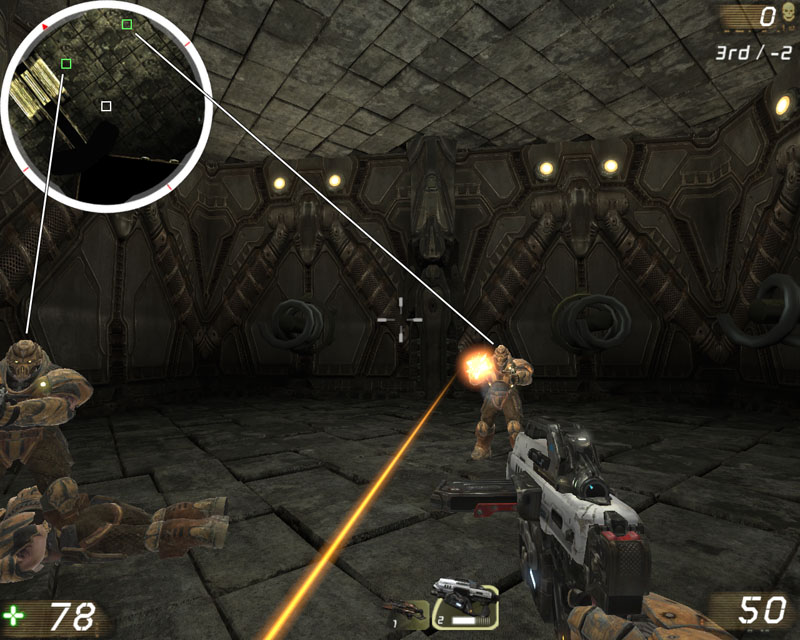
图片 13.22 –现在地图中的其它玩家出现在了关卡中。 8. 保存并编译脚本。确保DVD上为这章提供的CompassContent.upk包位于Unpublished\CookedPC目录中。修复任何可能存在的问题。
指南 13.13 –小地图, 第四部分:地图设置和屏幕截图
现在，我们把所有的东西放到适当的地方来测试小地图系统。首先，我们需要使用MU_Minimap actor设置地图，并获取一个它的屏幕截图作为地图。 1. 打开UnrealEd并打开DVD中为这张提供的COM-CH_13_Minimap.ut3地图。
图片 13.23 –COM-CH_13_Minimap.ut3地图。 2. 打开Actor类别浏览器并选择Actor->Compass->MU_Minimap下的MU_Minimap类。

图片 13.24 –选中了MU_Minimap 类。 3. 在视口中，把新的MU_Minimap actor添加到地图中。尽您最大可能把它放到地图中心附近。不必完全精确，但是要尽可能地近。如果您想调整一个方向作为这个地图的North(北方)，您也可以围绕Y轴旋转actor。

图片 13.25 – MU_Minimap actor的放置。 4. 在顶视口中，缩小到一个较好的角度，然后在选中MU_Minimap actor的情况下打开Properties Window(属性窗口)。 通过展开MapExtentsComponent部分，在MU_Minimap类别中找到SphereRadius属性。增加这个属性的值直到视口中的球体包围了地图的整个可放置区域为止。通常尽量在地图的外部留出一些空余空间。这个属性的一个较好的值大于是1600。

图片 13.26 –已经调整了球体的半径。 5. 保存地图，因为我们将把这部分和本指南的剩余部分分离开来。 6. 在我们分配地图材质和指南针覆盖图材质之前，我们需要获得关卡的屏幕截图以便供小地图使用。因为这是一个室内关卡，所以当从顶视图中获取屏幕截图时需要付出比在室外地图中更多的工作；主要是因为需要移除顶棚，以便我们可以在顶视口中看到屋内。
a. 这个示例中它不是那么难。选中组成顶棚的其中一个静态网格物体，然后右击它并选择Select Matching Static Meshes (This Class) (选择匹配的静态网格物体(这个类别))。这将会选中顶棚和地面。

图片 13.27 –选中了所有的地面和顶棚网格物体。
b. 在前视口和侧视口中，按下Ctrl + Alt + Shift +鼠标右键，然后在地面网格物体上拖拽区域选择。这将会从选中的项中删除地面，仅留下选中的顶棚。然后按下Delete(删除)键来删除选中的顶棚。
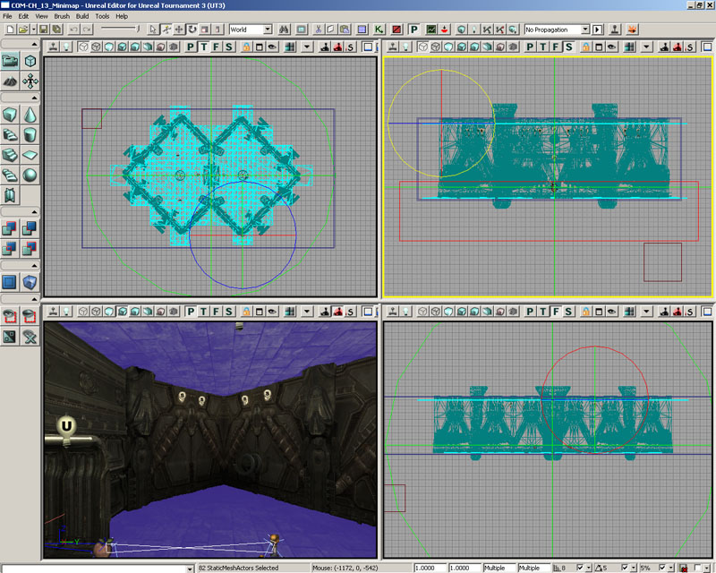
图片 13.28 –区域选择从选中的项目中删除了选中的地面。
c. 现在，选中在每个房间中央的带光照的网格物体，担不是选择光源actor本身，然后再次按下Delete(删除)键来删除它们。

图片 13.29 –删除带光照的网格物体本身。
d. 最后，选择围绕整个地图的蓝色的添加型画刷，并按下Delete(删除)键删除它。

图片 13.30 –删除画刷。
e. 最后，按下主工具条上的Build All(构建所有)按钮来更新BSP和光照。
7. 选择MU_Minimap actor，然后右击工具箱中的Sheet Brush(薄片)画刷构建器按钮来打开Sheet Brush(薄片)画刷选项。设置X和Y的值为3200(把SphereRadius乘以2)并点击Build(构建)。视口中的红色画刷构建器将会更新。

图片 13.31 –构建画刷以MU_Minimap actor 为中心放置。 8. 选择红色的构建画刷，并把它移动到关卡中存在的几何体的下面。找到并选择位于通用浏览器中的CompassContent包中的M_Black材质，然后点击工具箱中的CSG: Add(CSG：添加)按钮来使用红色画刷构建器创建添加型薄片，并对它应用M_Black材质。

图片 13.32 –已经添加了薄片画刷。 9. 最大化顶视口，然后按下它的工具条上的Lit(带光照)按钮来显示地图的带光照视图。接下来，按下G键来切换游戏模式。您现在应该看到小地图所使用的地图贴图了。

图片 13.33 –顶视口显示了带光照的视图。 10. 从这里开始完成地图贴图应该是非常容易的。
a. 缩小地图指导黑色的薄片刚刚适应视口位置，然后按下Print Screen(打印屏幕)按键。

图片 13.34 –薄片画刷填充了视口。
b. 现在，打开图片编辑程序并创建一个新的图片。我们将在这个例子中使用Photoshop。
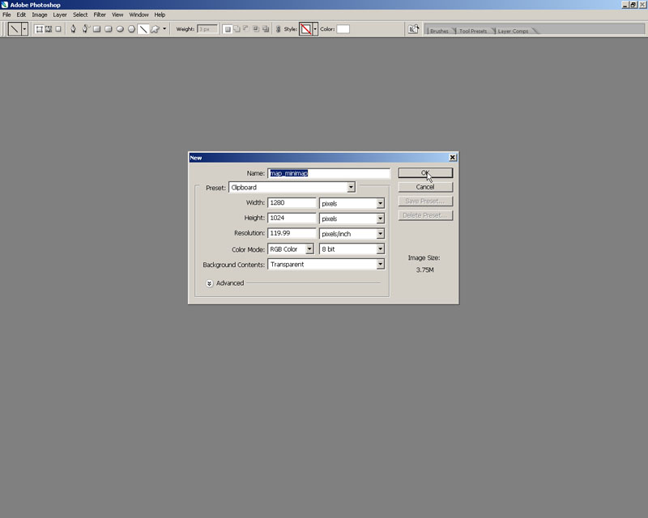
图片 13.35 –创建一个新的图片。
c. 按下Ctrl + V来把复制的屏幕截图粘帖到图片中。

图片 13.36 –把捕获的屏幕截图粘帖到图片中。
d. 选择代表地图贴图的黑色部分，并把图片剪辑到那个区域。

图片 13.37 –图片剪辑到黑色区域。
e. 现在，缩放图片或调整它的尺寸，使它达到2048x2048。
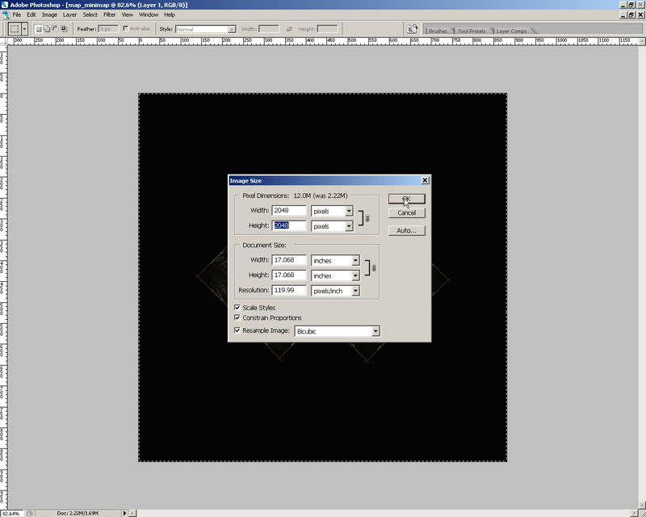
图片 13.38 –缩放后的图片。
f. 把文件保存为Unreal可以导入的文件。通常最好是24-位的Targa (.tga)文件。
11. 如果您想保存地图，那么您可以把它保存到UnrealEd的地图中，因为稍后您可以需要使用它来截获屏幕截图。但请确保把它保存为一个不同的文件名，以便您不会覆盖掉真正的地图。
指南 13.14 – 小地图, 第五部分:小地图材质和最后调整
创建了小地图的图片后，我们需要把它导入到虚幻编辑器中，并为小地图和指南针覆盖图创建MaterialInstanceConstants。这些必须被分配给关卡中的MU_Minimap actor的响应属性。 1. 从虚幻编辑器，和前一个指南中那个添加了MU_Minimap actor的地图，而不是那个用于获取屏幕截图的地图。 2. 打开通用浏览器，并从File(文件)菜单中选择Import(导入)。选择您在前一个指南中保存的地图图片，然后点击Open(打开)。
a. 在出现的对话框中，从包的下拉列表中选择COM-CH_13_Minimap包，如果需要您可以输入一个新的名称，或者您可以保留文件的默认名称。

图片 13.39 –选中了关卡的包。
b. 在Options(选项)列表中，设置LODGroup为TEXTUREGROUP_UI。这是非常重要的，因为虚幻引擎3使用这些组来限制贴图的大小。UI组将允许贴图显示为完全的2048x2048尺寸，所以不会出现除了一般的压缩失真外的其它质量失真。

图片 13.40 –选中TEXTUREGROUP_UI LODGRoup 。
c. 如果您想加快导入过程，那么您也可以选中DeferCompression选项。这样在您保存包(在这个实例中是地图)之前将不会执行压缩。当然这也将会减慢保存过程，所以最终还是要占用时间的。

图片 13.41 –选择了DeferCompression 选项。
d. Click OK to import the texture.
注意：您选择的包应该是您正在使用的关卡的名称。如果您把它命名为不同的名称，那么您则需要从包列表中选择这个名称。
3. 在通用浏览器中右击新导入的贴图，或双击它，来打开它的属性。向下滚动到SRGB属性，并取消选中它。这将会关闭伽马校正。如果没有关闭这个选项，那么当贴图在屏幕上显示时将会非常非常地黑。

图片 13.42 –关闭了SRGB 标志。 4. 现在，在CompassContent包中找到M_minimap材质。右击它并选择New Material Instance Constant(新建材质实例常量)。
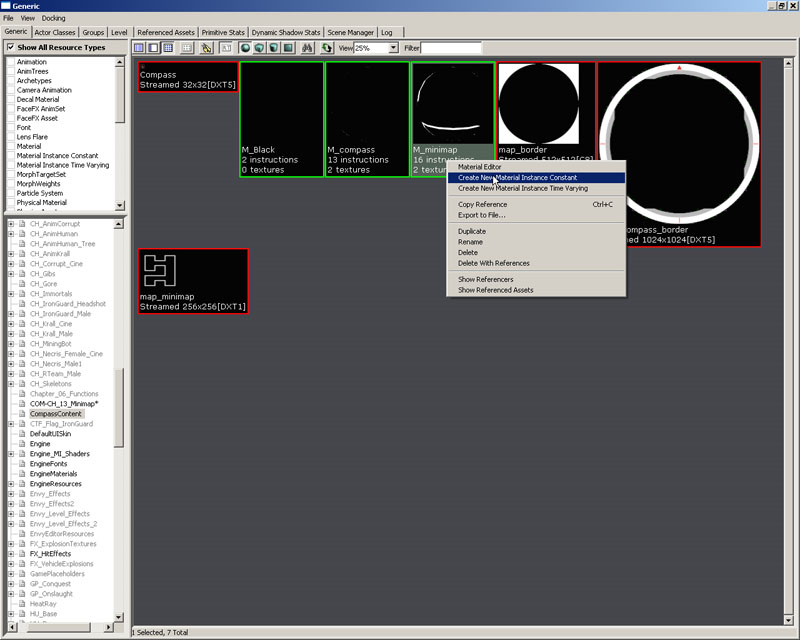
图片 13.43 –从M_minimap 材质创建一个新的MaterialInstanceConstant 。 a. 在出现的对话框中，从包的下拉列表中选择COM-CH_13_Minimap包，如果需要可以输入新的名称，或者保留默认名称M_minimap_INST。然后点击确认。 注意：您选择的包应该是您正在使用的关卡的名称。如果您把它命名为不同的名称，那么则应该从包列表中选择那个名称。 5. 当新的MaterialInstanceConstant的材质实例编辑器出现时，展开ScalarParameterValues部分，并点击列出的参数附件的复选框。然后展开TextureParameterValues部分，并选中这些变量附近的复选框。最后，展开VectorParameterValues部分，选中那里出现的参数附近的复选框。

图片 13.44 –材质实例编辑器。 6. 选择您导入的地图贴图，然后按下TextureParameterValues部分的MinimapTex参数的Use Current Selection In Browser(使用浏览器中的当前选中项)来把地图贴图分配给材质。

图片 13.45 – The map texture replaces the default. 地图贴图贴换了默认的贴图。 7. 回到CompassContent包中，右击M_compass材质并选择New Material Instance Constant(新建材质实例常量)
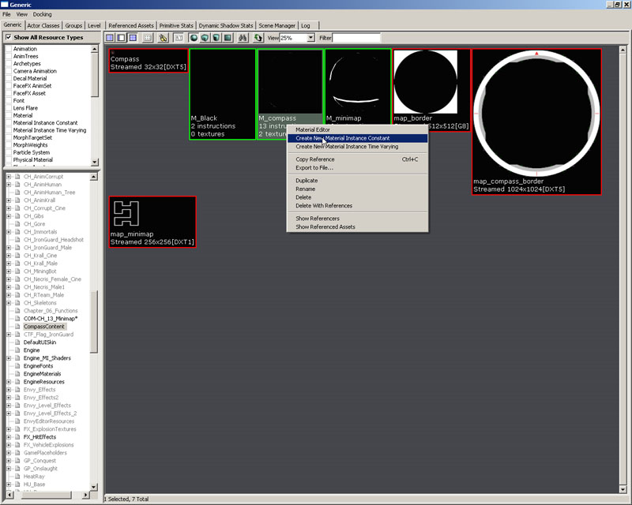
图片 13.46 – A从M_compass 材质创建了一个新的MaterialInstanceConstant 。
a. 在出现的对话框中，从包的下拉列表中选择COM-CH_13_Minimap包，如果需要可以输入新的名称，或者保留它的默认名称M_compass_INST。点击确认。
注意：您选择的包应该是您正在使用的关卡的名称。如果您把它命名为不同的名称，那么您则需要从包列表中选择这个名称。
8. 当出现MaterialInstanceConstant的材质实例编辑器时，展开ScalarParameterValues部分，然后选中列出的参数旁边的复选框。然后展开TextureParameterValues部分，选中这些参数中每个参数旁边的复选框。
9. 在关卡中选择MU_Minimap actor，然后按F4 打开它的属性。选择您刚刚创建的小地图MaterialInstanceConstant，然后点击Minimap的属性旁边的Use Current Selection In Browser(使用浏览器中的当前选项)按钮。然后选择指南针覆盖图MaterialInstanceConstant，点击CompassOverlay属性的Use Current Selection In Browser(使用浏览器中的当前选项)按钮。
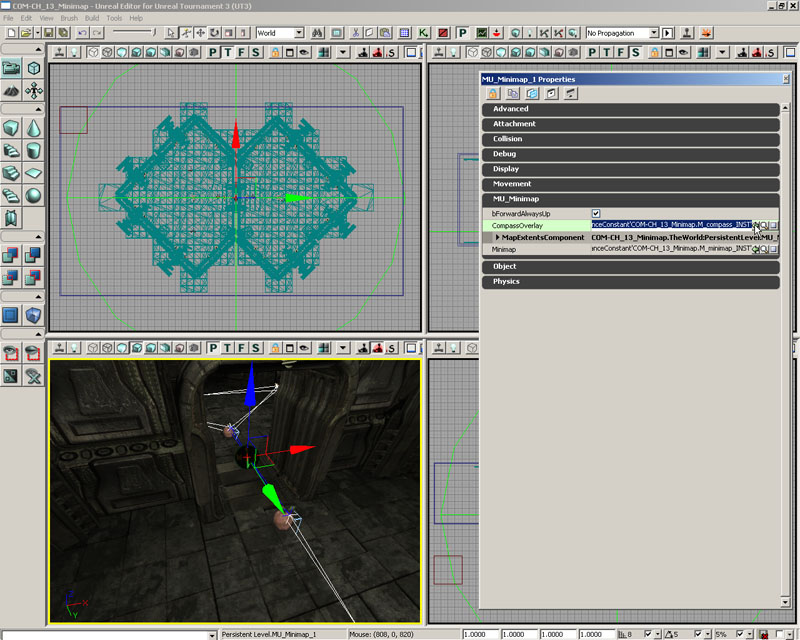
图片 13.47 –已经把MaterialInstanceConstants 分配给了MU_Minimap actor 。 10. 使用任何您想设置的名称来保存地图，只要该名称以“COM-“开头即可，然后或者通过按下主工具条上的Publish Map(发布地图)按钮，或者因为这仅是一个快速测试，可以把它的副本保存到Published\CookedPC\CustomMaps文件夹。不要忘了也把CompassContent.upk复制到Published\CookedPC目录中。
指南 13.15 – 下地图,第六部分:测试小地图
现在已经具备了所有的代码，我们需要设置地图来使用我们的新的小地图系统。我们开始测试小地图系统是否可正常工作。 1. 加载UT3，登录或选择离线玩游戏。 2. 选择Instant Action(即时战斗)游戏。
图片 13.48 –选择Instant Action(即时战斗)。 3. 从下一个菜单中选择MinimapGame游戏类型。
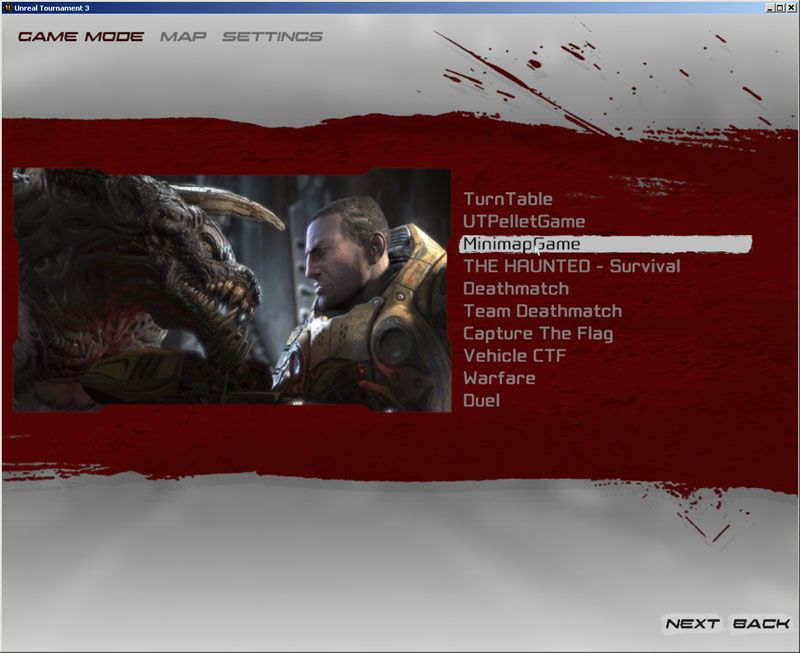
图片 13.49 –选择了MinimapGame 。 4. 您先您应该可以看到在前一章指南中保存的地图了，因为它是列表中的唯一地图。双击这个地图。

图片 13.50 –选中了这个地图。 5. 在下一个菜单上设置机器人的数量为2或更少，因为在这个小关卡中，除了玩家外，它所具有PlayerStarts仅够产生两个机器人。

图片 13.51 –设置了机器人。 6. 启动游戏。只要加载了关卡，那么您就应该可以看到在屏幕左上角显示的地图，尽管在比赛开始之前地图的旋转和移动还没有效果。

图片 13.52 – The map appears on the screen.地图出现在屏幕上。 7. 开始比赛，您现在应该看到小地图反映了地图中玩家的实际位置。现在移动和旋转就将会导致小地图进行更新。您也应该看到当您距离机器人足够近以至于可以显示它们时，机器人将会显示为绿色的方块。

图片 13.53 –地图反映了玩家的旋转和位置。 小地图系统应该可以按照我们期望的方式工作了。显然，这种效果是非常有用的，并且在较大的室外的环境中这是非常有趣的。这个小的室内地图只是简单地快速它的方法。
指南 13.16 –战利品体积, 第一部分: 初始设置
我们的地图设计人员回来，并提出了新的需求。他的地图需要一种新的可以连接一些酷的特效的体积。这时，他已经完全地使用Kismet进行工作了，并且已经创建了一些非常复杂的序列来完成两个非常简单的人物。现在需要我们创建这个新的体积，并实现必要的Kismet定义来替换它的整个Kismet序列。 当和他见面讨论后，我们具有了以下需求说明：- 它必须是一个可放置的画刷体积。
- 它应该是浅绿色，以便和其它的画刷的默认颜色相区分。
- 它在Kismet中有三个输出事件。
- Red Captured –当红队完成占领战利品体积时。
- Blue Captured –当蓝队完成占领战利品体积时。
- Unstable –当两方战斗或它的占领状态改变时。
- 它有几个可配置的元素
- Time to Capture(占领所需时间) –在编辑器中为每个体积设置的一个整型值(默认为3)。
- 占领该体积所需的最少的玩家数量。(默认为1)。
- Rewarded Points(奖励分数) –给予占领者的奖励(默认为 1)
- 它应该有一个计时器，设置为半秒，用于检查占领是否正在开始。
- 它应该是可切换的。
interface ICaptureVolume;
a. 声明OnToggle()函数，这将会和体积的启用状态相绑定。
3. 保存脚本来保存您的成果。
4. 现在已经清楚地定义了我们的接口，我们可以开始制作一些CaptureVolume本身的管道工作。所有从Volume类继承而来的体积，因为我们没有任何需要从其它派生类中继承的东西，所以我们需要照着做。关于这个体积没有太多的工作要做，我们仅需要逐步地书写这个体积的代码。
function OnToggle(SeqAct_Toggle action);b. 声明CheckBeginCapture()函数，它用于测试我们的体积的占有者，并返回这个体积是否被占领。
function bool CheckBeginCapture();c. GetTouchingUTPawns()的功能是聚集所有接触的战利品体积的Pawns并把它们放到红队或蓝队的数组容器中，然后再返回它们。因为我们仅能返回一个值，所以我们使用了输出变量。函数将会返回体积中的角色的总数量。
function int GetTouchingUTPawns(out array<UTPawn> redTouching, out array<UTPawn> blueTouching);d. tCheckCapture()是一个和计时器相关联的函数，它将会进行许多后台计算。
function tCheckCapture();e. UpdateEvents()用于驱动输出kismet接口，它接收触发了的事件的标志。
function UpdateEvents(int flag);
a. 使用UnrealScript轮廓创建一个名称为CaptureVolume.uc的新文件。
b. 定义我们的类，使它实现ICaptureVolume接口。
class CaptureVolume extends Volume placeable implements(ICaptureVolume) Config(UTBook);c. 现在，我们在默认属性中稍稍停顿一下。这里仅有一个元素需要注意，即BrushColor。它的值和我们在指南针那章中所赋予它的整数值一样。
defaultproperties
{
// For UnrealEd And to avoid removal
BrushColor = (B=128, G=255, R=128, A=255)
bColored = True
bStatic = false
}
d. 现在我们可以编译它，并在编辑器中看到新的体积，如果我们按照先前描述的步骤。这个体积的工作方式和其它体积一样，在体积的快速列表中，进这个体积是浅绿色的。
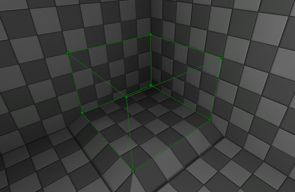
图片 13.54 - 虚幻编辑器中呈现了我们的新CaptureVolume 。 5. 从现在开始事情开始变得困难。我们将为我们的地图设计人员创建很多变量，来配置这个体积的各种元素。同时这时我们也可以创建一组枚举值来帮助增加我们代码的可读性。以下，您将会看到一段包含了关于这些变量用途的注释的代码。
a. ECaptureEvent是一个枚举变量，它说明了三个触发后的状态。这主要是处于可读性考虑，它替换了我们代码中的常量。
6. 现在我们应该可以更新默认属性来反映新的变量的默认值了。默认属性代码块现在是独立的，但我将指出的是我们使用枚举变量中的常量来对CapturedTeamID进行赋值，设置它的默认值为已经定义好的值。其它的值已经传递下去由我们的地图设计人员进行处理。
enum ECaptureEvent
{
CAP_REDCONT,
CAP_BLUECONT,
CAP_UNSTABLE
};
b. ETeams是非常简单的，它的作用和前一个枚举值一样。
enum ETeams
{
RED_TEAM,
BLUE_TEAM,
NO_TEAM
};
c. 现在我们看一下类的主要部分。iTimeToCapture是一个整型变量，它控制了占领那个体积所需要的时间。接下来的三个变量是供地图设计人员使用的，在Capture子类别下，由(Capture)语句控制。
var (Capture) int iTimeToCapture;d. iPointReward是给予占领体积的团队的奖励。如果地图设计人员选择他不希望在这里设置值，那么他可以设置该值为0。
var (Capture) int iPointReward;e. 这个变量实际上是很重要的。仅当处于体积中的玩家的数量达到这个值时才会触发体积。
var (Capture) int iMinimumPlayersForCapture;f. 这两个变量用于跟踪体积的状态。也就是，它们分别代表了正在控制战利品体积的队伍和正在尝试控制战利品体积的队伍。
var int CapturingTeamID; var int CapturedTeamID;g. TimeCapturing记录了在占领这个体积时所消耗的时间间隔。
var float TimeCapturing;h. 为了记录谁正在参与占领这个体积，所以使用了CapturingMembers。
var array<UTPawn> CapturingMembers;i. 这用于正常的切换目的，它使得我们的地图设计人员根据需要打开或关闭这个体积。
var bool bEnabled;
defaultproperties
{
// For UEd setup mainly.(主要用于虚幻编辑器的设置)
BrushColor = (B=128, G=255, R=128, A=255)
bColored = True
bStatic = false
// Default values for the volume(体积的默认值)
iMinimumPlayersForCapture = 1
CapturedTeamID = NO_TEAM
iTimeToCapture = 3
iPointReward = 5
}
7. 保存脚本来保存您的成果。
指南 13.17 – 战利品体积, 第二部分:接触和时间
我们的体积已经在编辑器中了，现在我们应该可以开始进一步设计关于体积的更有趣的方面了。特别是当我们接触体积时该如何处理，这可能看上去非常复杂，但是如果我们讲解它将立即变得简单，因为我们已经有了一个事件函数：Touch。 这个Touch事件将会触发一个用于确认我们的占领状态改变信息的计时器。计时器对于记录它们不需要在每次更新时都检测的东西是有用的，但是在每次时间间隔除需要检测一次。对于在这个时间间隔中我们尝试执行的回调函数，无论它是否递归，我们都可以尝试在这个时间间隔内执行它。我们的需求说明中已经描述了这个计时器，所以我们来处理这些需求。 1. 打开ConTEXT和CaptureVolume.uc脚本。 2. 首先我们需要定义我们的Touch事件。
event Touch(Actor Other, PrimitiveComponent OtherComp, vector HitLocation, vector HitNormal )
{
}
3. 在最终衍生函数中调用这函数的父类版本对我们是有利的，它可以避免依赖或预期值复制。
Super.Touch(Other, OtherComp, HitLocation, Hitnormal);4. 当我们的体积启用时，我们需要执行我们的计时器，它会和一个函数想绑定。我们这里设置时间间隔为0.5秒，并且我们也为第二个参数传入true来使得计时器每隔0.5秒运行一次，直到我们停止它为止。
if (bEnabled) // If we are enabled... go crazy. SetTimer(0.5f, true, 'tCheckCapture');5. 继续Touch事件，我们必须处理接触问题。我们的功能函数是非常有用的，所以我们现在来处理它。定义函数和它的参数。
function int GetTouchingUTPawns(out array<UTPawn> redTouching, out array<UTPawn> blueTouching)
{
}
6. Count变量是内包含的，也就是- 属于两个队的，它指出的时这个体积中的UTPawn的数量。最终将会返回它的值。P用于在稍后的迭代中使用。
local int Count; local UTPawn P; Count = 0;7. 从所有的必要的Pawns中进行迭代并没有它听起来那么复杂。UnrealScript有很多非常有用的迭代器，但是要确保不要盲目地使用它们。它们的性能消耗是非常高的，特别是在更新(tick)函数中使用它们时。
foreach self.TouchingActors(class'UTPawn', P)
{
}
8. 我们想确保的是Pawn是活的，如果它不移动，那么我们将继续循环到下一个Pawn。
if (P == None || P.health <= 0 || P.Controller.IsDead() || P.GetTeam() == None)
{
continue;
}
9. 假设它们是有生命的，那么我们需要把它们添加到适当的队伍中。
if (P.GetTeam().TeamIndex == RED_TEAM)
{
redTouching.AddItem(P);
Count++;
}
else
{
blueTouching.AddItem(P);
Count++;
}
10. 最后返回Count的值。
return Count;11. 保存脚本来保存您的成果。
指南 13.18 – 战利品体积, 第三部分:占领状态
现在，我们已经具有了设计良好的体积，并且它的视觉效果也开始呈现出来。我们有几个有趣的函数提供了一些功能，我们仍然需要对这个提及进行进一度的处理。接下来，我们将进入到CheckBeginCapture程序中，它将返回布尔值。 1. 打开ConTEXT 和the CaptureVolume.uc脚本。 2. 和通常一样，我们需要按照我们的接口定义我们的函数。
simulated function bool CheckBeginCapture()
{
}
3. 我们需要一组数组来存放红队和蓝队的pawn，这两个数组将会用于计算。
local array<UTPawn> redTouching; local array<UTPawn> blueTouching;4. 创建一个计数器，它用于记录占领体积的队伍的大小，简化了最终的测试。
local int Count;5. 我们可以使用GetTouchingUTPawns功能函数来填充我们的数组。
GetTouchingUTPawns(redTouching, blueTouching);6. 检查数组长度的大小，如果在这个体积中没有玩家，那么清楚计时器并返回。
if (blueTouching.length == 0 && redTouching.length == 0)
{
ClearTimer('tCheckCapture', self);
return false;
}
7. 如果有不只一个队伍存在与体积中，那么我们需要发送CAP_UNSTABLE触发器，并返回。
else if (!(blueTouching.length == 0 ^^ redTouching.length == 0))
{
UpdateEvents(CAP_UNSTABLE);
return false;
}
8. 设置好这两个测试后，我们可以确信我们仅有红队或蓝队，但是不会同时有两个对存在。我们首先关注红队…
if (redTouching.length > 0)
{
}
a. 把接触体积的玩家复制到一个数组中，我们稍后将会使用它来发放我们的分数。
9. 现在，对蓝队执行我们刚刚做的动作。
CapturingMembers = redTouching;b. 获得这里的玩家的数量。
Count = redTouching.length;c. 设置CapturingTeamID为红队。
CapturingTeamID = RED_TEAM;
else
{
CapturingMembers = blueTouching;
Count = blueTouching.length;
CapturingTeamID = BLUE_TEAM;
}
10. 测试进入体积中的玩家的数量，以便确认这个体积现在是否可以被占领，并且确认占领体积的队伍不是被击败的队伍。第二个测试是确保体积不会被同一个队伍占领。
if ((iMinimumPlayersForCapture <= Count) && (CapturingTeamID != CapturedTeamID))
return true;
else
return false;
11. 保存脚本来保存您的成果。
现在我们已经设计出了大部分的类。还要声明几个函数即可，所以我们很快就要完成这个提及的设计了，并且我们将会在游戏中看到非常酷的事件。
指南 13.19 – 战利品体积, 第四部分:计时器函数
下一步是计时器函数。这个函数每隔0.5秒执行一次，记住这个值是有用的，因为实时游戏开发对于效率低的函数是非常不友好的。 1. 定义tCheckCapture函数。
simulated function tCheckCapture()
{
}
2. 我们需要创建一组变量来帮助我们进行稍后的迭代操作。
local UTPawn P; local UTPlayerReplicationInfo ScorerPRI;3. 如果TimeCapturing是负数，则清除它的值。
if (TimeCapturing < 0) TimeCapturing = 0;4. 现在，我们调用CheckBeginCapture函数，来判断我们是否需要触发任何东西。如果我们不需要触发任何东西，我们需要清除几个东西。注意，当我们完成判断时，我们需要清除计时器。
if (!CheckBeginCapture())
{
CapturingTeamID = NO_TEAM;
TimeCapturing = 0;
ClearTimer('tCheckCapture', self);
return;
}
5. 如果我们应该开始占领，那么我们现在应该更新我们占领体积的时间，这不是可以完全直接地完成的，但好在Epic有一个函数来帮助我们完成这个功能。
TimeCapturing += GetTimerRate('tCheckCapture', self);
6. 使用这个新的时间值，我们将其和这个体积的配置值相比较。如果它大于或等于配置值，那么我们需要继续处理占领情况。
if (TimeCapturing >= iTimeToCapture)
{
}
a. 如果占领战利品体积的队伍是蓝队，那么将发出蓝队占领成功的事件，否则发出红对占领成功的事件。
7. 保存脚本。
UpdateEvents(CapturingTeamID == BLUE_TEAM ? CAP_BLUECONT : CAP_REDCONT);b. 增加占领体积的队员的分数。这是使用了我们先前定义的两个变量。
foreach CapturingMembers(P)
{
ScorerPRI = UTPlayerReplicationInfo(P.Controller.PlayerReplicationInfo);
ScorerPRI.Score += (iPointReward);
ScorerPRI.bForceNetUpdate = TRUE;
}
c. 更新占领成功的队伍Captured Team ID。
CapturedTeamID = CapturingTeamID;d. 最后清除Capturing team ID(正在占领体积的队伍的ID)和占领事件计数器，并清除计时器。这样做是很重要的，以便我们不会重新调用这个函数。
CapturingTeamID = NO_TEAM;
TimeCapturing = 0;
ClearTimer('tCheckCapture', self);
指南 13.20 –战利品体积，第五部分：更新事件
当我们想触发序列事件时，我们需要循环我们的体积中的所有序列事件，并发出适当的标记。这个函数处理这个过程，包括处理循环。 1. 打开ConTEXT 和CaptureVolume.uc脚本。 2. 定义函数，并声明几个变量和迭代以便方便使用，
function UpdateEvents(int flag)
{
}
3. 声明一个局部Int型变量在For循环中使用；并声明一个SeqEvent_VolumeCaptured对象引用，以便把它和迭代器结合使用。
local int i; local SeqEvent_VolumeCaptured CaptureEvent;4. 启动一个针对所有GeneratedEvents的循环。当在Kismet中及其它事件序列中工作时，这个数组是有用的。
for (i = 0; i < GeneratedEvents.Length; i++)
{
}
5. 在循环内部，把生成的事件分配给VolumeCaptured序列事件，如果分配成功，那么则给它发送一个适当的标志。这个函数Notify_VolumeCaptured将会使用我们的一个接口。
CaptureEvent = SeqEvent_VolumeCaptured(GeneratedEvents[i]);
if (CaptureEvent != None)
{
CaptureEvent.Notify_VolumeCaptured(flag);
}
6. 保存脚本。
指南 13.21 – 战利品体积, 第六部分:切换体积的开关状态&更新我们的默认属性代码块
我们这个类进有一个单独的函数，它是一个开关函数。 1. 打开ConTEXT 和CaptureVolume.uc脚本。 2. 当把这个函数附加到一个切换附加到一个开关事件时将会调用OnToggle。它的工作原理和光源及其他actors类似。
simulated function OnToggle(SeqAct_Toggle action)
{
}
3. 它接收Sequence Action(序列动作)并判断它们的激活状态。所以0、1、2分别连接到On, Off 和Toggle上。
if (action.InputLinks[0].bHasImpulse) bEnabled = TRUE; else if (action.InputLinks[1].bHasImpulse) bEnabled = FALSE; else if (action.InputLinks[2].bHasImpulse) bEnabled = !bEnabled;4. 然后我们强制网络更新。
ForceNetRelevant();5. 现在，我们需要更新我们的默认属性代码块，来包含我们稍后将要实现的Capture序列事件。
defaultproperties
{
// For UEd setup mainly.(主要用于虚幻编辑器设置)
BrushColor = (B=128, G=255, R=128, A=255)
bColored = True
bStatic = false
// Default values for the volume(体积的默认值)
iMinimumPlayersForCapture = 1
CapturedTeamID = NO_TEAM
iTimeToCapture = 3
iPointReward = 5
// Attach our output events(附加我们的输出事件)
SupportedEvents(0)=Class'UTBook.SeqEvent_VolumeCaptured'
}
6. 保存脚本。
指南 13.22 – 战利品体积,第七部分:序列事件的接口和实现
我们已经完成了体积，现在我们需要为Captured Volume Sequence Event(占领后的体积的序列事件)熟悉代码。这些可能稍稍有点麻烦，但是请尽量不要让它们太扰乱您。这个例子非常的简单，我现在就开始。 1. 打开ConTEXT并使用UnrealScript轮廓创建一个名称为ICaptureSequenceEvent.uc的新文件。 2. 我们的序列事件的接口仅需要声明一个单独的函数。interface ICaptureSequenceEvent; function Notify_VolumeCaptured(int outputIndex);3. 保存脚本。 4. 实现那个函数的步骤和我们先前的步骤一样。使用UnrealScript轮廓创建一个命名为SeqEvent_VolumeCaptured.uc的新文件。 5. 定义一个类，使它扩展SequenceEvent并实现我们刚刚声明的接口。
class SeqEvent_VolumeCaptured extends SequenceEvent DependsOn(CaptureVolume) implements(ICaptureSequenceEvent);6. 声明我们的函数Notify_VolumeCaptured()。
function Notify_VolumeCaptured(int outputIndex)
{
}
7. 声明一个Int型的局部动态数组，并创建一个日志语句来输出发送到函数的参数的值。
local array<int> ActivateIndices;
`log("Notify_VolumeCaptured has been executed" @ outputIndex,,'UTBook');
8. 我们一次仅发送一个单独的触发器，因为我们尽关心一个。
ActivateIndices[0] = outputIndex;
if (CheckActivate(Originator, None, false, ActivateIndices))
{
`log("Notify_VolumeCaptured has been activated",,'UTBook');
}
9. 进入到默认属性代码块中，我们需要考虑几个链接及在哪里需要进行连接。
defaultproperties
{
}
10. 这些链接是很重要的，它们的索引是发送的实际值。
OutputLinks(0) = (LinkDesc="Red Capture") OutputLinks(1) = (LinkDesc="Blue Capture") OutputLinks(2) = (LinkDesc="Unstable")11. 现在对Kismet元素做一些调整，分配它的名称、类别及最大触发次数的默认值。
ObjName = "Volume Captured" ObjCategory = "Objective" MaxTriggerCount = 0 // Default to being triggered infinite times. (默认触发无数次)12. 最后，我们想确保玩家不会触发这个事件。
bPlayerOnly = False13. 保存脚本。
指南 13.23 –放置战利品体积并设置它工作
现在，我们完成了体积及它的序列事件，所以您已经清除地知道如何为您自己的mod创建它们。本指南将解释迭代器的应用，展示了它们在另一个语言中是怎样像for each循环那样工作的。 1. 再次启动编辑器并编译代码包。加载编辑器并创建一个新的地图。 2. 打开Actor Classes(Actors类别)浏览器。 3. 导航到File(文件) > Open(打开)，然后导航到您的Scripts目录，即您编译好的.u文件所在的目录。 4. 一旦已经加载了包，将会看到新的体积，在Actor > Brush (画刷)> Volume(体积)下，正如图片14所显示的。选中它并返回到您的地图。您现在可以右击并选择“Add Compass Here(在这里添加指南针)”菜单项。
图片 13.55 -具有我们的CaptureVolume 的Actor Class (Actor类别)浏览器。 5. 把其中一个体积放到地图中。我们稍后将建立一个Kismet序列。在图片15中，我们看到了代表我们新体积的选项，可以在Capture的子类别中看到。
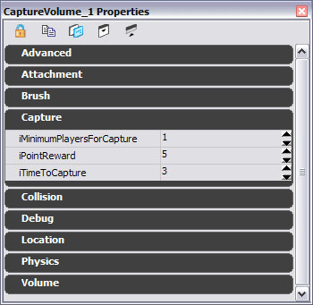
图片 13.56 -地图设置人员的新的设置值。 6. 下一步是打开Kismet，并查看我们的新的序列事件。选中其中一个体积，打开Kismet编辑器并右击。在关联菜单中应该有一个为选中体积创建新的事件的选项，在它的下面应该有我们的序列事件- Volume Captured。它为我们所描画的元素如下所示：

图片 13.57 -我们的体积的Kismet。 7. 您可以继续在这里创建序列，以便我们可以看到这个元素的效果。这里是我的序列事件。

图片 13.58 - Kismet演示，它具有一个自定义的Kismet事件。 8. 如果您已经完成了那个操作，那么我们便可以把地图保存出来，然后启动它。我们应该在日志文件中看到以下信息：
Log: Family Asset Package Loaded: CH_Corrupt_Arms_SF Log: CONSTRUCTIONING: LoadFamilyAsset (LIAM) Took: -0.01 secs ScriptLog: Finished creating custom characters in 1.8737 seconds Error: Can't start an online game that hasn't been created ScriptLog: START MATCH ScriptLog: Num Matches Played: 0 UTBook: Notify_VolumeCaptured has been activated Log: Kismet: Red Capture UTBook: Notify_VolumeCaptured has been activated UTBook: Notify_VolumeCaptured has been activated Log: Kismet: Blue Capture UTBook: Notify_VolumeCaptured has been activated Log: Kismet: Red Capture Error: Can't end an online game that hasn't been created Log: Closing by request Log: appRequestExit(0)9. 从这里我们可以看到，当游戏过程中我们的体积被占领后更新了记分牌。
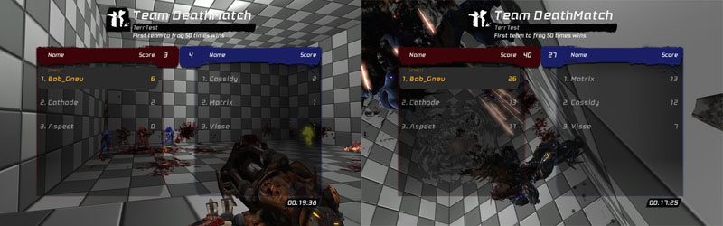
图片 13.59 – 记分牌在左侧显示了40秒，在右侧显示了95秒。 此刻我们已经完成了这个指南。让我们在快速地回顾一下，并标出重点。
- 可以为任何我们将要开发的类创建接口。
- 按照我们的操作，创建体积并不是很难的事。
- Kismet实际上是通过序列事件创建的，它们有非常简单的接口。
- 迭代器节省了我们很多的事件和精力，但是根据您调用它们的地方的不同它的性能消耗可能非常大。
- 事先对某些东西进行规划可以帮助我们简化开发过程并且如果正确地使用，他还能
UT3中的接口
以下列出了虚幻竞技场3中包含的所有非测试相关的接口，它们可能是有用的。还有一些其它的接口，它们或者是native的或者是和游戏中的native处理相关的函数，这些接口已经超出本书的范围。| IQueryHandler |
| struct KeyValuePair |
| struct WebAdminQuery |
| function init(WebAdmin) |
| function cleanup() |
| function bool handleQuery(WebAdminQuery) |
| function bool unhandledQuery(WebAdminQuery) |
| function registerMenuItems(WebAdminMenu) |
| ISession |
| function string getId() |
| function reset() |
| function Object getObject(string) |
| function putObject(string, Object) |
| function removeObject(string) |
| function string getString(string, optional string) |
| function putString(string, string) |
| function removeString(string) |
| ISessionHandler |
| function ISession create() |
| function ISession get(string) |
| function bool destroy(ISession) |
| function destroyAll() |
| IWebAdminAuth |
| function init(WorldInfo) |
| function cleanup() |
| function IWebAdminUser authenticate(string, string, out string) |
| function bool logout(IWebAdminUser) |
| function bool validate(string, string, out string) |
| function bool validateUser(IWebAdminUser, out string) |
| IWebAdminUser |
| struct MessageEntry |
| function string getUsername() |
| function bool canPerform(string) |
| function PlayerController getPC() |
|
function messageHistory(out array |
| OnlineAccountInterface |
| function bool CreateOnlineAccount(string,string,string,optional string) |
| delegate OnCreateOnlineAccountCompleted(EOnlineAccountCreateStatus) |
|
function AddCreateOnlineAccountCompletedDelegate(delegate |
|
function ClearCreateOnlineAccountCompletedDelegate(delegate |
| function bool CreateLocalAccount(string,optional string) |
| function bool RenameLocalAccount(string,string,optional string) |
| function bool DeleteLocalAccount(string,optional string) |
|
function bool GetLocalAccountNames(out array |
| function bool IsKeyValid() |
| function bool SaveKey(string) |
| OnlineContentInterface |
| delegate OnContentChange() |
|
function AddContentChangeDelegate(delegate |
|
function ClearContentChangeDelegate(delegate |
| delegate OnReadContentComplete(bool) |
|
function AddReadContentComplete(byte,delegate |
|
function ClearReadContentComplete(byte,delegate |
| function bool ReadContentList(byte) |
|
function EOnlineEnumerationReadState GetContentList(byte, out array |
| function bool QueryAvailableDownloads(byte) |
| delegate OnQueryAvailableDownloadsComplete(bool) |
|
function AddQueryAvailableDownloadsComplete(byte,delegate |
|
function ClearQueryAvailableDownloadsComplete(byte,delegate |
| function GetAvailableDownloadCounts(byte,out int,out int) |
| OnlineGameInterface |
| function bool CreateOnlineGame(byte,OnlineGameSettings) |
| delegate OnCreateOnlineGameComplete(bool) |
|
function AddCreateOnlineGameCompleteDelegate(delegate |
|
function ClearCreateOnlineGameCompleteDelegate(delegate |
| function bool UpdateOnlineGame(OnlineGameSettings) |
| function OnlineGameSettings GetGameSettings() |
| function bool DestroyOnlineGame() |
| delegate OnDestroyOnlineGameComplete(bool) |
|
function AddDestroyOnlineGameCompleteDelegate(delegate |
|
function ClearDestroyOnlineGameCompleteDelegate(delegate |
| function bool FindOnlineGames(byte,OnlineGameSearch) |
| delegate OnFindOnlineGamesComplete(bool) |
|
function AddFindOnlineGamesCompleteDelegate(delegate |
|
function ClearFindOnlineGamesCompleteDelegate(delegate |
| function bool CancelFindOnlineGames() |
| delegate OnCancelFindOnlineGamesComplete(bool) |
|
function AddCancelFindOnlineGamesCompleteDelegate(delegate |
|
function ClearCancelFindOnlineGamesCompleteDelegate(delegate |
| function OnlineGameSearch GetGameSearch() |
| function bool FreeSearchResults(optional OnlineGameSearch) |
| function bool JoinOnlineGame(byte,const out OnlineGameSearchResult) |
| delegate OnJoinOnlineGameComplete(bool) |
|
function AddJoinOnlineGameCompleteDelegate(delegate |
|
function ClearJoinOnlineGameCompleteDelegate(delegate |
| function bool GetResolvedConnectString(out string) |
| function bool RegisterPlayer(UniqueNetId,bool) |
| delegate OnRegisterPlayerComplete(bool) |
|
function AddRegisterPlayerCompleteDelegate(delegate |
|
function ClearRegisterPlayerCompleteDelegate(delegate |
| function bool UnregisterPlayer(UniqueNetId) |
| delegate OnUnregisterPlayerComplete(bool) |
|
function AddUnregisterPlayerCompleteDelegate(delegate |
|
function ClearUnregisterPlayerCompleteDelegate(delegate |
| function bool StartOnlineGame() |
| delegate OnStartOnlineGameComplete(bool) |
|
function AddStartOnlineGameCompleteDelegate(delegate |
|
function ClearStartOnlineGameCompleteDelegate(delegate |
| function bool EndOnlineGame() |
| delegate OnEndOnlineGameComplete(bool) |
|
function AddEndOnlineGameCompleteDelegate(delegate |
|
function ClearEndOnlineGameCompleteDelegate(delegate |
| function EOnlineGameState GetOnlineGameState() |
| function bool RegisterForArbitration() |
| delegate OnArbitrationRegistrationComplete(bool) |
|
function AddArbitrationRegistrationCompleteDelegate(delegate |
|
function ClearArbitrationRegistrationCompleteDelegate(delegate |
|
function array |
|
function AddGameInviteAcceptedDelegate(byte,delegate |
|
function ClearGameInviteAcceptedDelegate(byte,delegate |
| delegate OnGameInviteAccepted(OnlineGameSettings) |
| function bool AcceptGameInvite(byte) |
|
function bool RecalculateSkillRating(const out array |
| OnlineNewsInterface |
| function bool ReadGameNews(byte) |
| delegate OnReadGameNewsCompleted(bool) |
|
function AddReadGameNewsCompletedDelegate(delegate |
|
function ClearReadGameNewsCompletedDelegate(delegate |
| function string GetGameNews(byte) |
| function bool ReadContentAnnouncements(byte) |
| delegate OnReadContentAnnouncementsCompleted(bool) |
|
function AddReadContentAnnouncementsCompletedDelegate(delegate |
|
function ClearReadContentAnnouncementsCompletedDelegate(delegate |
| function string GetContentAnnouncements(byte) |
| OnlinePlayerInterface |
| delegate OnLoginChange() |
| delegate OnLoginCancelled() |
| delegate OnMutingChange() |
| delegate OnFriendsChange() |
| function bool ShowLoginUI(optional bool) |
| function bool Login(byte,string,string,optional bool) |
| function bool AutoLogin() |
| delegate OnLoginFailed(byte,EOnlineServerConnectionStatus) |
|
function AddLoginFailedDelegate(byte,delegate |
|
function ClearLoginFailedDelegate(byte,delegate |
| function bool Logout(byte) |
| delegate OnLogoutCompleted(bool) |
|
function AddLogoutCompletedDelegate(byte,delegate |
|
function ClearLogoutCompletedDelegate(byte,delegate |
| function ELoginStatus GetLoginStatus(byte) |
| function bool GetUniquePlayerId(byte,out UniqueNetId) |
| function string GetPlayerNickname(byte) |
| function EFeaturePrivilegeLevel CanPlayOnline(byte) |
| function EFeaturePrivilegeLevel CanCommunicate(byte) |
| function EFeaturePrivilegeLevel CanDownloadUserContent(byte) |
| function EFeaturePrivilegeLevel CanPurchaseContent(byte) |
| function EFeaturePrivilegeLevel CanViewPlayerProfiles(byte) |
| function EFeaturePrivilegeLevel CanShowPresenceInformation(byte) |
| function bool IsFriend(byte,UniqueNetId) |
|
function bool AreAnyFriends(byte,out array |
| function bool IsMuted(byte,UniqueNetId) |
| function bool ShowFriendsUI(byte) |
|
function AddLoginChangeDelegate(delegate |
|
function ClearLoginChangeDelegate(delegate |
|
function AddLoginCancelledDelegate(delegate |
|
function ClearLoginCancelledDelegate(delegate |
|
function AddMutingChangeDelegate(delegate |
|
function ClearMutingChangeDelegate(delegate |
|
function AddFriendsChangeDelegate(byte,delegate |
|
function ClearFriendsChangeDelegate(byte,delegate |
| function bool ReadProfileSettings(byte,OnlineProfileSettings) |
| delegate OnReadProfileSettingsComplete(bool) |
|
function AddReadProfileSettingsCompleteDelegate(byte,delegate |
|
function ClearReadProfileSettingsCompleteDelegate(byte,delegate |
| function OnlineProfileSettings GetProfileSettings(byte) |
| function bool WriteProfileSettings(byte,OnlineProfileSettings) |
| delegate OnWriteProfileSettingsComplete(bool) |
|
function AddWriteProfileSettingsCompleteDelegate(byte,delegate |
|
function ClearWriteProfileSettingsCompleteDelegate(byte,delegate |
| function bool ReadFriendsList(byte,optional int,optional int) |
| delegate OnReadFriendsComplete(bool) |
|
function AddReadFriendsCompleteDelegate(byte,delegate |
|
function ClearReadFriendsCompleteDelegate(byte,delegate |
|
function EOnlineEnumerationReadState GetFriendsList(byte,out array |
|
function SetOnlineStatus(byte,int,const out array |
| function bool ShowKeyboardUI(byte,string,string,optional bool,optional bool,optional string,optional int) |
|
function AddKeyboardInputDoneDelegate(delegate |
|
function ClearKeyboardInputDoneDelegate(delegate |
| function string GetKeyboardInputResults(out byte) |
| delegate OnKeyboardInputComplete(bool) |
| function bool AddFriend(byte,UniqueNetId,optional string) |
| function bool AddFriendByName(byte,string,optional string) |
| delegate OnAddFriendByNameComplete(bool) |
|
function AddAddFriendByNameCompleteDelegate(byte,delegate |
|
function ClearAddFriendByNameCompleteDelegate(byte,delegate |
| function bool AcceptFriendInvite(byte,UniqueNetId) |
| function bool DenyFriendInvite(byte,UniqueNetId) |
| function bool RemoveFriend(byte,UniqueNetId) |
| delegate OnFriendInviteReceived(byte,UniqueNetId,string,string) |
|
function AddFriendInviteReceivedDelegate(byte,delegate |
|
function ClearFriendInviteReceivedDelegate(byte,delegate |
| function bool SendMessageToFriend(byte,UniqueNetId,string) |
| function bool SendGameInviteToFriend(byte,UniqueNetId,optional string) |
|
function bool SendGameInviteToFriends(byte,array |
| delegate OnReceivedGameInvite(byte,string) |
|
function AddReceivedGameInviteDelegate(byte,delegate |
|
function ClearReceivedGameInviteDelegate(byte,delegate |
| function bool JoinFriendGame(byte,UniqueNetId) |
| delegate OnJoinFriendGameComplete(bool) |
|
function AddJoinFriendGameCompleteDelegate(delegate |
|
function ClearJoinFriendGameCompleteDelegate(delegate |
|
function GetFriendMessages(byte,out array |
| delegate OnFriendMessageReceived(byte,UniqueNetId,string,string) |
|
function AddFriendMessageReceivedDelegate(byte,delegate |
|
function ClearFriendMessageReceivedDelegate(byte,delegate |
| function bool DeleteMessage(byte,int) |
| OnlinePlayerInterfaceEx |
| function bool ShowFeedbackUI(byte,UniqueNetId) |
| function bool ShowGamerCardUI(byte,UniqueNetId) |
| function bool ShowMessagesUI(byte) |
| function bool ShowAchievementsUI(byte) |
| function bool ShowInviteUI(byte,optional string) |
| function bool ShowContentMarketplaceUI(byte) |
| function bool ShowMembershipMarketplaceUI(byte) |
| function bool ShowDeviceSelectionUI(byte,int,bool) |
|
function AddDeviceSelectionDoneDelegate(byte,delegate |
|
function ClearDeviceSelectionDoneDelegate(byte,delegate |
| function int GetDeviceSelectionResults(byte,out string) |
| delegate OnDeviceSelectionComplete(bool) |
| function bool IsDeviceValid(int) |
| function bool UnlockAchievement(byte,int) |
|
function AddUnlockAchievementCompleteDelegate(byte,delegate |
|
function ClearUnlockAchievementCompleteDelegate(byte,delegate |
| delegate OnUnlockAchievementComplete(bool) |
| function bool UnlockGamerPicture(byte,int) |
| delegate OnProfileDataChanged() |
|
function AddProfileDataChangedDelegate(byte,delegate |
|
function ClearProfileDataChangedDelegate(byte,delegate |
| function bool ShowFriendsInviteUI(byte,UniqueNetId) |
| function bool ShowPlayersUI(byte) |
| OnlineStatsInterface |
|
function bool ReadOnlineStats(const out array |
| function bool ReadOnlineStatsForFriends(byte,OnlineStatsRead) |
| function bool ReadOnlineStatsByRank(OnlineStatsRead,optional int,optional int) |
| function bool ReadOnlineStatsByRankAroundPlayer(byte,OnlineStatsRead,optional int) |
|
function AddReadOnlineStatsCompleteDelegate(delegate |
|
function ClearReadOnlineStatsCompleteDelegate(delegate |
| delegate OnReadOnlineStatsComplete(bool) |
| function FreeStats(OnlineStatsRead) |
| function bool WriteOnlineStats(UniqueNetId,OnlineStatsWrite) |
| function bool FlushOnlineStats() |
| delegate OnFlushOnlineStatsComplete(bool) |
|
function AddFlushOnlineStatsCompleteDelegate(delegate |
|
function ClearFlushOnlineStatsCompleteDelegate(delegate |
|
function bool WriteOnlinePlayerScores(const out array |
| function string GetHostStatGuid() |
| function bool RegisterHostStatGuid(const out string) |
| delegate OnRegisterHostStatGuidComplete(bool) |
|
function AddRegisterHostStatGuidCompleteDelegate(delegate |
|
function ClearRegisterHostStatGuidCompleteDelegateDelegate(delegate |
| function string GetClientStatGuid() |
| function bool RegisterStatGuid(UniqueNetId,const out string) |
| OnlineSystemInterface |
| function bool HasLinkConnection(); |
| delegate OnLinkStatusChange(bool) |
|
function AddLinkStatusChangeDelegate(delegate |
|
function ClearLinkStatusChangeDelegate(delegate |
| delegate OnExternalUIChange(bool) |
|
function AddExternalUIChangeDelegate(delegate |
|
function ClearExternalUIChangeDelegate(delegate |
| function ENetworkNotificationPosition GetNetworkNotificationPosition() |
| function SetNetworkNotificationPosition(ENetworkNotificationPosition) |
| delegate OnControllerChange(int,bool) |
|
function AddControllerChangeDelegate(delegate |
|
function ClearControllerChangeDelegate(delegate |
| function bool IsControllerConnected(int) |
| delegate OnConnectionStatusChange(EOnlineServerConnectionStatus) |
|
function AddConnectionStatusChangeDelegate(delegate |
|
function ClearConnectionStatusChangeDelegate(delegate |
| function ENATType GetNATType() |
| delegate OnStorageDeviceChange() |
|
function AddStorageDeviceChangeDelegate(delegate |
|
function ClearStorageDeviceChangeDelegate(delegate |
| OnlineVoiceInterface |
| function bool RegisterLocalTalker(byte) |
| function bool UnregisterLocalTalker(byte) |
| function bool RegisterRemoteTalker(UniqueNetId) |
| function bool UnregisterRemoteTalker(UniqueNetId) |
| function bool IsLocalPlayerTalking(byte) |
| function bool IsRemotePlayerTalking(UniqueNetId) |
| function bool IsHeadsetPresent(byte) |
| function bool SetRemoteTalkerPriority(byte,UniqueNetId,int) |
| function bool MuteRemoteTalker(byte,UniqueNetId) |
| function bool UnmuteRemoteTalker(byte,UniqueNetId) |
| delegate OnPlayerTalking(UniqueNetId) |
|
function AddPlayerTalkingDelegate(delegate |
|
function ClearPlayerTalkingDelegate(delegate |
| function StartNetworkedVoice(byte) |
| function StopNetworkedVoice(byte) |
| function bool StartSpeechRecognition(byte) |
| function bool StopSpeechRecognition(byte) |
|
function bool GetRecognitionResults(byte,out array |
| delegate OnRecognitionComplete() |
|
function AddRecognitionCompleteDelegate(byte,delegate |
|
function ClearRecognitionCompleteDelegate(byte,delegate |
| function bool SelectVocabulary(byte,int) |
| function bool SetSpeechRecognitionObject(byte,SpeechRecognition) |
| function bool MuteAll(byte,bool) |
| function bool UnmuteAll(byte) |
| UIDataStoreSubscriber |
| native function SetDataStoreBinding(string, optional int) |
| native function string GetDataStoreBinding(optional int) const |
| native function bool RefreshSubscriberValue(optional int) |
| native function NotifyDataStoreValueUpdated(UIDataStore, bool, name, UIDataProvider, int) |
|
native function GetBoundDataStores(out array |
| native function ClearBoundDataStores() |
| UIDataStorePublisher extends UIDataStoreSubscriber |
|
native function bool SaveSubscriberValue(out array |
| UIEventContainer |
|
native final function GetUIEvents(out array |
| native final function bool AddSequenceObject(SequenceObject, optional bool) |
| native final function RemoveSequenceObject(SequenceObject) |
|
native final function RemoveSequenceObjects(array |
| UIListElementCellProvider |
| const UnknownCellDataFieldName = 'NAME_None'; |
| UIStringRenderer |
| native final virtual function SetTextAlignment(EUIAlignment, EUIAlignment) |
| UIStyleResolver |
| native function name GetStyleResolverTag() |
| native function bool SetStyleResolverTag(name) |
| native function bool NotifyResolveStyle(UISkin, bool, optional UIState, const optional name) |
总结
现在我们学习了UnrealScript中的接口相关的内容。我们已经看到了如何定义它们、它的作用及这种情况中的巧合以及在两个指南中实现接口的原理。尽管它们是非常简单的概念，但是它在我们的项目开发中起着至关重要的作用。 接口允许我们依靠编译器来控制我们的实现和类之间的关系。它们是一个模板，通过使用它们提供一组特定的函数，而函数的实现是可以改变的。接口包含函数、代理、常量或结构体的定义，但不能包含其他东西。附加文件
- Chapter_13_Packages.rar: 指南针和小地图的包
- Chapter13_CompleteSource.rar:完整的源文件。
- COM-CH_13_Minimap.rar: COM-CH_13_Minimap.ut3 地图